CPP 教程
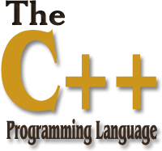
CPP 是一种中级语言，它是由 Bjarne Stroustrup 于 1979 年在贝尔实验室开始设计开发的。CPP 进一步扩充和完善了 C 语言，是一种面向对象的程序设计语言。CPP 可运行于多种平台上，如 Windows、MAC 操作系统以及 UNIX 的各种版本。
本教程通过通俗易懂的语言来讲解 CPP 编程语言。
现在开始学习 CPP 编程！
谁适合阅读本教程？
本教程是专门为初学者打造的，帮助他们理解与 CPP 编程语言相关的基础到高级的概念。
阅读本教程前，您需要了解的知识：
在您开始练习本教程中所给出的各种实例之前，您需要对计算机程序和计算机程序设计语言有基本的了解。
编译/执行 CPP 程序
实例
#include <iostream>using namespace std;int main(){
cout << "Hello, world!" << endl; return 0;
}
运行结果：
Hello, world!
你可以用 "\n" 代替以上代码里的 "endl"。
CPP 简介
CPP 是一种静态类型的、编译式的、通用的、大小写敏感的、不规则的编程语言，支持过程化编程、面向对象编程和泛型编程。
CPP 被认为是一种中级语言，它综合了高级语言和低级语言的特点。
CPP 是由 Bjarne Stroustrup 于 1979 年在新泽西州美利山贝尔实验室开始设计开发的。CPP 进一步扩充和完善了 C 语言，最初命名为带类的C，后来在 1983 年更名为 CPP。
CPP 是 C 的一个超集，事实上，任何合法的 C 程序都是合法的 CPP 程序。
注意：使用静态类型的编程语言是在编译时执行类型检查，而不是在运行时执行类型检查。
面向对象程序设计
CPP 完全支持面向对象的程序设计，包括面向对象开发的四大特性：
- 封装
- 抽象
- 继承
- 多态
标准库
标准的 CPP 由三个重要部分组成：
- 核心语言，提供了所有构件块，包括变量、数据类型和常量，等等。
- CPP 标准库，提供了大量的函数，用于操作文件、字符串等。
- 标准模板库（STL），提供了大量的方法，用于操作数据结构等。
ANSI 标准
ANSI 标准是为了确保 CPP 的便携性 —— 您所编写的代码在 Mac、UNIX、Windows、Alpha 计算机上都能通过编译。
由于 ANSI 标准已稳定使用了很长的时间，所有主要的 CPP 编译器的制造商都支持 ANSI 标准。
学习 CPP
学习 CPP，关键是要理解概念，而不应过于深究语言的技术细节。
学习程序设计语言的目的是为了成为一个更好的程序员，也就是说，是为了能更有效率地设计和实现新系统，以及维护旧系统。
CPP 支持多种编程风格。您可以使用 Fortran、C、Smalltalk 等任意一种语言的编程风格来编写代码。每种风格都能有效地保证运行时间效率和空间效率。
CPP 的使用
基本上每个应用程序领域的程序员都有使用 CPP。
CPP 通常用于编写设备驱动程序和其他要求实时性的直接操作硬件的软件。
CPP 广泛用于教学和研究。
任何一个使用苹果电脑或 Windows PC 机的用户都在间接地使用 CPP，因为这些系统的主要用户接口是使用 CPP 编写的。
标准化
| 发布时间 | 文档 | 通称 | 备注 | |
|---|---|---|---|---|
| 2015 | ISO/IEC TS 19570:2015 | - | 用于并行计算的扩展 | |
| 2015 | ISO/IEC TS 18822:2015 | - | 文件系统 | |
| 2014 | ISO/IEC 14882:2014 | CPP14 | 第四个CPP标准 | |
| 2011 | ISO/IEC TR 24733:2011 | - | 十进制浮点数扩展 | |
| 2011 | ISO/IEC 14882:2011 | CPP11 | 第三个CPP标准 | |
| 2010 | ISO/IEC TR 29124:2010 | - | 数学函数扩展 | |
| 2007 | ISO/IEC TR 19768:2007 | CPPTR1 | CPP技术报告：库扩展 | |
| 2006 | ISO/IEC TR 18015:2006 | - | CPP性能技术报告 | |
| 2003 | ISO/IEC 14882:2003 | CPP03 | 第二个CPP标准 | |
| 1998 | ISO/IEC 14882:1998 | CPP98 | 第一个CPP标准 |
CPP 环境设置
本地环境设置
如果您想要设置 CPP 语言环境，您需要确保电脑上有以下两款可用的软件，文本编辑器和 CPP 编译器。
文本编辑器
这将用于输入您的程序。文本编辑器包括 Windows Notepad、OS Edit command、Brief、Epsilon、EMACS 和 vim/vi。
文本编辑器的名称和版本在不同的操作系统上可能会有所不同。例如，Notepad 通常用于 Windows 操作系统上，vim/vi 可用于 Windows 和 Linux/UNIX 操作系统上。
通过编辑器创建的文件通常称为源文件，源文件包含程序源代码。CPP 程序的源文件通常使用扩展名 .cpp、.cp 或 .c。
在开始编程之前，请确保您有一个文本编辑器，且有足够的经验来编写一个计算机程序，然后把它保存在一个文件中，编译并执行它。
CPP 编译器
写在源文件中的源代码是人类可读的源。它需要"编译"，转为机器语言，这样 CPU 可以按给定指令执行程序。
CPP 编译器用于把源代码编译成最终的可执行程序。
大多数的 CPP 编译器并不在乎源文件的扩展名，但是如果您未指定扩展名，则默认使用 .cpp。
最常用的免费可用的编译器是 GNU 的 C/CPP 编译器，如果您使用的是 HP 或 Solaris，则可以使用各自操作系统上的编译器。
以下部分将指导您如何在不同的操作系统上安装 GNU 的 C/CPP 编译器。这里同时提到 C/CPP，主要是因为 GNU 的 gcc 编译器适合于 C 和 CPP 编程语言。
安装 GNU 的 C/CPP 编译器
UNIX/Linux 上的安装
如果您使用的是 Linux 或 UNIX，请在命令行使用下面的命令来检查您的系统上是否安装了 GCC：
$ g++ -v
如果您的计算机上已经安装了 GNU 编译器，则会显示如下消息：
Using built-in specs.Target: i386-redhat-linuxConfigured with: ../configure --prefix=/usr .......Thread model: posix
gcc version 4.1.2 20080704 (Red Hat 4.1.2-46)
如果未安装 GCC，那么请按照 http://gcc.gnu.org/install/ 上的详细说明安装 GCC。
Mac OS X 上的安装
如果您使用的是 Mac OS X，最快捷的获取 GCC 的方法是从苹果的网站上下载 Xcode 开发环境，并按照安装说明进行安装。一旦安装上 Xcode，您就能使用 GNU 编译器。
Xcode 目前可从 developer.apple.com/technologies/tools/ 上下载。
Windows 上的安装
为了在 Windows 上安装 GCC，您需要安装 MinGW。为了安装 MinGW，请访问 MinGW 的主页 www.mingw.org，进入 MinGW 下载页面，下载最新版本的 MinGW 安装程序，命名格式为 MinGW-
当安装 MinGW 时，您至少要安装 gcc-core、gcc-g++、binutils 和 MinGW runtime，但是一般情况下都会安装更多其他的项。
添加您安装的 MinGW 的 bin 子目录到您的 PATH 环境变量中，这样您就可以在命令行中通过简单的名称来指定这些工具。
当完成安装时，您可以从 Windows 命令行上运行 gcc、g++、ar、ranlib、dlltool 和其他一些 GNU 工具。
使用 Visual Studio (Graphical Interface) 编译
1、下载及安装 Visual Studio Community 2015。
2、打开 Visual Studio Community
3、点击 File -> New -> Project
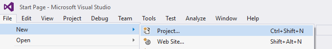
4、左侧列表选择 Templates -> Visual CPP -> Win32 Console Application，并设置项目名为 MyFirstProgram。
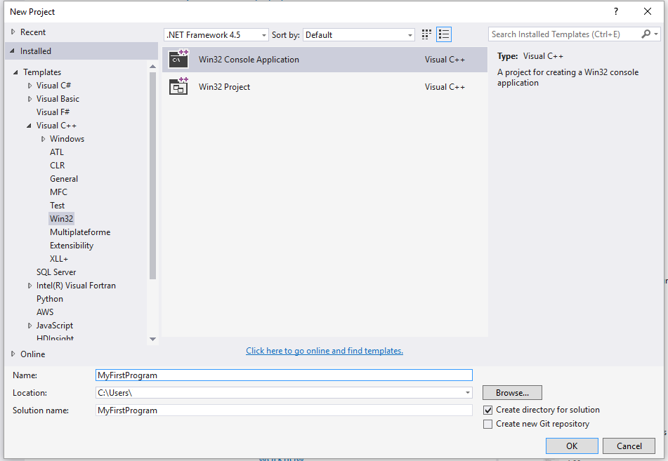
5、点击 OK。
6、在以下窗口中点击 Next
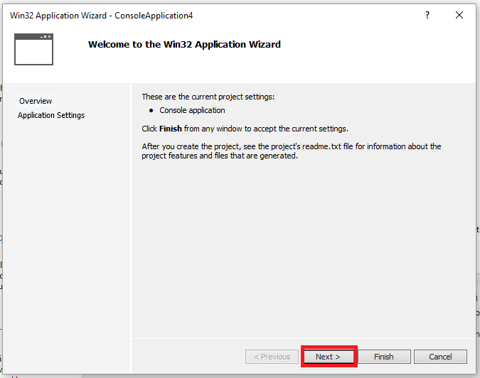
7、在弹出的窗口中选择 Empty project 选项后，点击 Finish 按钮：
8、右击文件夹 Source File 并点击 Add --> New Item... :
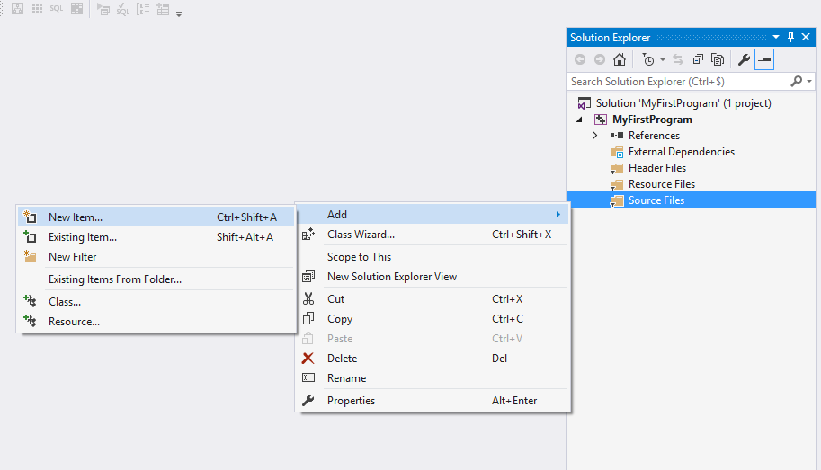
9、选择 CPP File 然后设置文件名为 main.cpp，然后点击 Add：
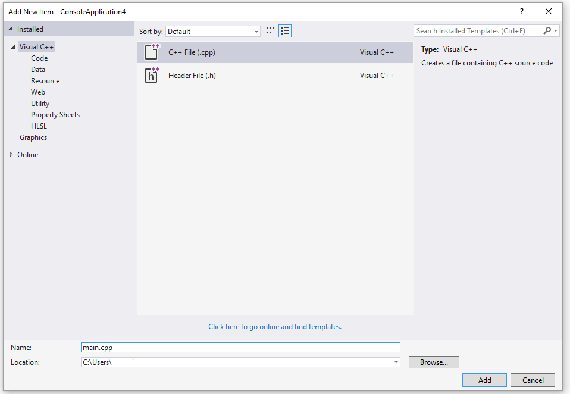
10、拷贝以下代码到 main.cpp 中：
#include <iostream>int main(){
std::cout << "Hello World!\n";
return 0;}
界面如下所示：

11、点击菜单上的 Debug -> Start Without Debugging (或按下 ctrl + F5) :
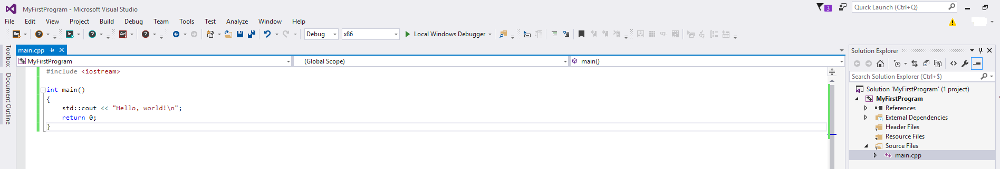
12、完成以上操作后，你可以看到以下输出：
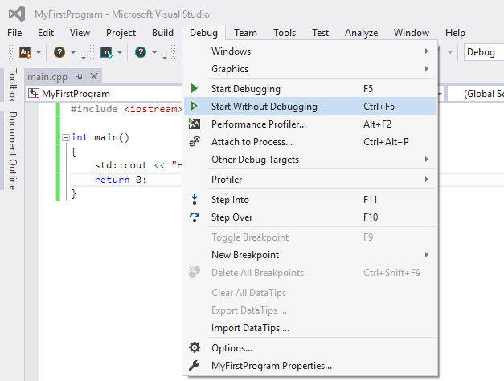
g++ 应用说明
程序 g++ 是将 gcc 默认语言设为 CPP 的一个特殊的版本，链接时它自动使用 CPP 标准库而不用 C 标准库。通过遵循源码的命名规范并指定对应库的名字，用 gcc 来编译链接 CPP 程序是可行的，如下例所示：
$ gcc main.cpp -lstdCPP -o main
下面是一个保存在文件 helloworld.cpp 中一个简单的 CPP 程序的代码：
#include <iostream>using namespace std;int main(){
cout << "Hello, world!" << endl;
return 0;}
最简单的编译方式：
$ g++ helloworld.cpp
由于命令行中未指定可执行程序的文件名，编译器采用默认的 a.out。程序可以这样来运行：
$ ./a.outHello, world!
通常我们使用 -o 选项指定可执行程序的文件名，以下实例生成一个 helloworld 的可执行文件：
$ g++ helloworld.cpp -o helloworld
执行 helloworld:
$ ./helloworldHello, world!
如果是多个 CPP 代码文件，如 runoob1.cpp、runoob2.cpp，编译命令如下：
$ g++ runoob1.cpp cpp、runoob2.cpp -o runoob
生成一个 runoob 可执行文件。
g++ 有些系统默认是使用 CPP98，我们可以指定使用 CPP11 来编译 main.cpp 文件：
g++ -g -Wall -std=CPP11 main.cpp
g++ 常用命令选项
| 选项 | 解释 |
|---|---|
| -ansi | 只支持 ANSI 标准的 C 语法。这一选项将禁止 GNU C 的某些特色， 例如 asm 或 typeof 关键词。 |
| -c | 只编译并生成目标文件。 |
| -DMACRO | 以字符串"1"定义 MACRO 宏。 |
| -DMACRO=DEFN | 以字符串"DEFN"定义 MACRO 宏。 |
| -E | 只运行 C 预编译器。 |
| -g | 生成调试信息。GNU 调试器可利用该信息。 |
| -IDIRECTORY | 指定额外的头文件搜索路径DIRECTORY。 |
| -LDIRECTORY | 指定额外的函数库搜索路径DIRECTORY。 |
| -lLIBRARY | 连接时搜索指定的函数库LIBRARY。 |
| -m486 | 针对 486 进行代码优化。 |
| -o | FILE 生成指定的输出文件。用在生成可执行文件时。 |
| -O0 | 不进行优化处理。 |
| -O | 或 -O1 优化生成代码。 |
| -O2 | 进一步优化。 |
| -O3 | 比 -O2 更进一步优化，包括 inline 函数。 |
| -shared | 生成共享目标文件。通常用在建立共享库时。 |
| -static | 禁止使用共享连接。 |
| -UMACRO | 取消对 MACRO 宏的定义。 |
| -w | 不生成任何警告信息。 |
| -Wall | 生成所有警告信息。 |
CPP 基本语法
CPP 程序可以定义为对象的集合，这些对象通过调用彼此的方法进行交互。现在让我们简要地看一下什么是类、对象，方法、即时变量。
- 对象 - 对象具有状态和行为。例如：一只狗的状态 - 颜色、名称、品种，行为 - 摇动、叫唤、吃。对象是类的实例。
- 类 - 类可以定义为描述对象行为/状态的模板/蓝图。
- 方法 - 从基本上说，一个方法表示一种行为。一个类可以包含多个方法。可以在方法中写入逻辑、操作数据以及执行所有的动作。
- 即时变量 - 每个对象都有其独特的即时变量。对象的状态是由这些即时变量的值创建的。
CPP 程序结构
让我们看一段简单的代码，可以输出单词 Hello World。
实例
#include <iostream>using namespace std; // main() 是程序开始执行的地方
int main(){
cout << "Hello World"; // 输出 Hello World return 0;
}
接下来我们讲解一下上面这段程序：
- CPP 语言定义了一些头文件，这些头文件包含了程序中必需的或有用的信息。上面这段程序中，包含了头文件
。 - 行 using namespace std; 告诉编译器使用 std 命名空间。命名空间是 CPP 中一个相对新的概念。
- 下一行 // main() 是程序开始执行的地方 是一个单行注释。单行注释以 // 开头，在行末结束。
- 下一行 int main() 是主函数，程序从这里开始执行。
- 下一行 cout << "Hello World"; 会在屏幕上显示消息 "Hello World"。
- 下一行 return 0; 终止 main( )函数，并向调用进程返回值 0。
编译 & 执行 CPP 程序
接下来让我们看看如何把源代码保存在一个文件中，以及如何编译并运行它。下面是简单的步骤：
- 打开一个文本编辑器，添加上述代码。
- 保存文件为 hello.cpp。
- 打开命令提示符，进入到保存文件所在的目录。
- 键入 'g++ hello.cpp '，输入回车，编译代码。如果代码中没有错误，命令提示符会跳到下一行，并生成 a.out 可执行文件。
- 现在，键入 ' a.out' 来运行程序。
- 您可以看到屏幕上显示 ' Hello World '。
$ g++ hello.cpp$ ./a.outHello World
请确保您的路径中已包含 g++ 编译器，并确保在包含源文件 hello.cpp 的目录中运行它。
您也可以使用 makefile 来编译 C/CPP 程序。
CPP 中的分号 & 块
在 CPP 中，分号是语句结束符。也就是说，每个语句必须以分号结束。它表明一个逻辑实体的结束。
例如，下面是三个不同的语句：
x = y;y = y+1;add(x, y);
块是一组使用大括号括起来的按逻辑连接的语句。例如：
{ cout << "Hello World"; // 输出 Hello World return 0;}
CPP 不以行末作为结束符的标识，因此，您可以在一行上放置多个语句。例如：
x = y;y = y+1;add(x, y);
等同于
x = y; y = y+1; add(x, y);
CPP 标识符
CPP 标识符是用来标识变量、函数、类、模块，或任何其他用户自定义项目的名称。一个标识符以字母 A-Z 或 a-z 或下划线 _ 开始，后跟零个或多个字母、下划线和数字（0-9）。
CPP 标识符内不允许出现标点字符，比如 @、$ 和 %。CPP 是区分大小写的编程语言。因此，在 CPP 中，Manpower 和 manpower 是两个不同的标识符。
下面列出几个有效的标识符：
mohd zara abc move_name a_123myname50 _temp j a23b9 retVal
CPP 关键字
下表列出了 CPP 中的保留字。这些保留字不能作为常量名、变量名或其他标识符名称。
| asm | else | new | this |
|---|---|---|---|
| auto | enum | operator | throw |
| bool | explicit | private | true |
| break | export | protected | try |
| case | extern | public | typedef |
| catch | false | register | typeid |
| char | float | reinterpret_cast | typename |
| class | for | return | union |
| const | friend | short | unsigned |
| const_cast | goto | signed | using |
| continue | if | sizeof | virtual |
| default | inline | static | void |
| delete | int | static_cast | volatile |
| do | long | struct | wchar_t |
| double | mutable | switch | while |
| dynamic_cast | namespace | template |
三字符组
三字符组就是用于表示另一个字符的三个字符序列，又称为三字符序列。三字符序列总是以两个问号开头。
三字符序列不太常见，但 CPP 标准允许把某些字符指定为三字符序列。以前为了表示键盘上没有的字符，这是必不可少的一种方法。
三字符序列可以出现在任何地方，包括字符串、字符序列、注释和预处理指令。
下面列出了最常用的三字符序列：
| 三字符组 | 替换 | |
|---|---|---|
| ??= | # | |
| ??/ | \ | |
| ??' | ^ | |
| ??( | [ | |
| ??) | ] | |
| ??! | \ | |
| ??< | { | |
| ??> | } | |
| ??- | ~ |
如果希望在源程序中有两个连续的问号，且不希望被预处理器替换，这种情况出现在字符常量、字符串字面值或者是程序注释中，可选办法是用字符串的自动连接："...?""?..."或者转义序列："...?\?..."。
从Microsoft Visual CPP 2010版开始，该编译器默认不再自动替换三字符组。如果需要使用三字符组替换（如为了兼容古老的软件代码），需要设置编译器命令行选项/Zc:trigraphs
g++仍默认支持三字符组，但会给出编译警告。
CPP 中的空格
只包含空格的行，被称为空白行，可能带有注释，CPP 编译器会完全忽略它。
在 CPP 中，空格用于描述空白符、制表符、换行符和注释。空格分隔语句的各个部分，让编译器能识别语句中的某个元素（比如 int）在哪里结束，下一个元素在哪里开始。因此，在下面的语句中：
int age;
在这里，int 和 age 之间必须至少有一个空格字符（通常是一个空白符），这样编译器才能够区分它们。另一方面，在下面的语句中：
fruit = apples + oranges; // 获取水果的总数
fruit 和 =，或者 = 和 apples 之间的空格字符不是必需的，但是为了增强可读性，您可以根据需要适当增加一些空格。
CPP 注释
程序的注释是解释性语句，您可以在 CPP 代码中包含注释，这将提高源代码的可读性。所有的编程语言都允许某种形式的注释。
CPP 支持单行注释和多行注释。注释中的所有字符会被 CPP 编译器忽略。
CPP 注释以 / 开始，以 / 终止。例如：
/* 这是注释 *//* CPP 注释也可以
* 跨行
*/
注释也能以 // 开始，直到行末为止。例如：
#include <iostream>using namespace std;main(){
cout << "Hello World"; // 输出 Hello World
return 0;}
当上面的代码被编译时，编译器会忽略 // 输出 Hello World，最后会产生以下结果：
Hello World
在 / 和 / 注释内部，// 字符没有特殊的含义。在 // 注释内，/ 和 / 字符也没有特殊的含义。因此，您可以在一种注释内嵌套另一种注释。例如：
/* 用于输出 Hello World 的注释
cout << "Hello World"; // 输出 Hello World
*/
CPP 数据类型
使用编程语言进行编程时，需要用到各种变量来存储各种信息。变量保留的是它所存储的值的内存位置。这意味着，当您创建一个变量时，就会在内存中保留一些空间。
您可能需要存储各种数据类型（比如字符型、宽字符型、整型、浮点型、双浮点型、布尔型等）的信息，操作系统会根据变量的数据类型，来分配内存和决定在保留内存中存储什么。
基本的内置类型
CPP 为程序员提供了种类丰富的内置数据类型和用户自定义的数据类型。下表列出了七种基本的 CPP 数据类型：
| 类型 | 关键字 |
|---|---|
| 布尔型 | bool |
| 字符型 | char |
| 整型 | int |
| 浮点型 | float |
| 双浮点型 | double |
| 无类型 | void |
| 宽字符型 | wchar_t |
一些基本类型可以使用一个或多个类型修饰符进行修饰：
- signed
- unsigned
- short
- long
下表显示了各种变量类型在内存中存储值时需要占用的内存，以及该类型的变量所能存储的最大值和最小值。
| 类型 | 位 | 范围 |
|---|---|---|
| char | 1 个字节 | -128 到 127 或者 0 到 255 |
| unsigned char | 1 个字节 | 0 到 255 |
| signed char | 1 个字节 | -128 到 127 |
| int | 4 个字节 | -2147483648 到 2147483647 |
| unsigned int | 4 个字节 | 0 到 4294967295 |
| signed int | 4 个字节 | -2147483648 到 2147483647 |
| short int | 2 个字节 | -32768 到 32767 |
| unsigned short int | 2 个字节 | 0 到 65,535 |
| signed short int | 2 个字节 | -32768 到 32767 |
| long int | 8 个字节 | -9,223,372,036,854,775,808 到 9,223,372,036,854,775,807 |
| signed long int | 8 个字节 | -9,223,372,036,854,775,808 到 9,223,372,036,854,775,807 |
| unsigned long int | 8 个字节 | 0 to 18,446,744,073,709,551,615 |
| float | 4 个字节 | +/- 3.4e +/- 38 (~7 个数字) |
| double | 8 个字节 | +/- 1.7e +/- 308 (~15 个数字) |
| long double | 8 个字节 | +/- 1.7e +/- 308 (~15 个数字) |
| wchar_t | 2 或 4 个字节 | 1 个宽字符 |
从上表可得知，变量的大小会根据编译器和所使用的电脑而有所不同。
下面实例会输出您电脑上各种数据类型的大小。
#include <iostream>using namespace std;int main(){
cout << "Size of char : " << sizeof(char) << endl;
cout << "Size of int : " << sizeof(int) << endl;
cout << "Size of short int : " << sizeof(short int) << endl;
cout << "Size of long int : " << sizeof(long int) << endl;
cout << "Size of float : " << sizeof(float) << endl;
cout << "Size of double : " << sizeof(double) << endl;
cout << "Size of wchar_t : " << sizeof(wchar_t) << endl; return 0;
}
本实例使用了 endl，这将在每一行后插入一个换行符，<< 运算符用于向屏幕传多个值。我们也使用 sizeof() 函数来获取各种数据类型的大小。
当上面的代码被编译和执行时，它会产生以下的结果，结果会根据所使用的计算机而有所不同：
Size of char : 1Size of int : 4Size of short int : 2Size of long int : 8Size of float : 4Size of double : 8Size of wchar_t : 4
typedef 声明
您可以使用 typedef 为一个已有的类型取一个新的名字。下面是使用 typedef 定义一个新类型的语法：
typedef type newname;
例如，下面的语句会告诉编译器，feet 是 int 的另一个名称：
typedef int feet;
现在，下面的声明是完全合法的，它创建了一个整型变量 distance：
feet distance;
枚举类型
枚举类型(enumeration)是CPP中的一种派生数据类型，它是由用户定义的若干枚举常量的集合。
如果一个变量只有几种可能的值，可以定义为枚举(enumeration)类型。所谓"枚举"是指将变量的值一一列举出来，变量的值只能在列举出来的值的范围内。
创建枚举，需要使用关键字 enum。枚举类型的一般形式为：
enum enum-name { list of names } var-list;
在这里，enum-name 是枚举类型的名称。名称列表 { list of names } 是用逗号分隔的。
例如，下面的代码定义了一个颜色枚举，变量 c 的类型为 color。最后，c 被赋值为 "blue"。
enum color { red, green, blue } c;c = blue;
默认情况下，第一个名称的值为 0，第二个名称的值为 1，第三个名称的值为 2，以此类推。但是，您也可以给名称赋予一个特殊的值，只需要添加一个初始值即可。例如，在下面的枚举中，green 的值为 5。
enum color { red, green=5, blue };
在这里，blue 的值为 6，因为默认情况下，每个名称都会比它前面一个名称大 1。
CPP 变量类型
变量其实只不过是程序可操作的存储区的名称。CPP 中每个变量都有指定的类型，类型决定了变量存储的大小和布局，该范围内的值都可以存储在内存中，运算符可应用于变量上。
变量的名称可以由字母、数字和下划线字符组成。它必须以字母或下划线开头。大写字母和小写字母是不同的，因为 CPP 是大小写敏感的。
基于前一章讲解的基本类型，有以下几种基本的变量类型，将在下一章中进行讲解：
| 类型 | 描述 |
|---|---|
| bool | 存储值 true 或 false。 |
| char | 通常是一个八位字节（一个字节）。这是一个整数类型。 |
| int | 对机器而言，整数的最自然的大小。 |
| float | 单精度浮点值。 |
| double | 双精度浮点值。 |
| void | 表示类型的缺失。 |
| wchar_t | 宽字符类型。 |
CPP 也允许定义各种其他类型的变量，比如枚举、指针、数组、引用、数据结构、类等等，这将会在后续的章节中进行讲解。
下面我们将讲解如何定义、声明和使用各种类型的变量。
CPP 中的变量定义
变量定义就是告诉编译器在何处创建变量的存储，以及如何创建变量的存储。变量定义指定一个数据类型，并包含了该类型的一个或多个变量的列表，如下所示：
type variable_list;
在这里，type 必须是一个有效的 CPP 数据类型，可以是 char、wchar_t、int、float、double、bool 或任何用户自定义的对象，variable_list 可以由一个或多个标识符名称组成，多个标识符之间用逗号分隔。下面列出几个有效的声明：
int i, j, k;char c, ch;float f, salary;double d;
行 int i, j, k; 声明并定义了变量 i、j 和 k，这指示编译器创建类型为 int 的名为 i、j、k 的变量。
变量可以在声明的时候被初始化（指定一个初始值）。初始化器由一个等号，后跟一个常量表达式组成，如下所示：
type variable_name = value;
下面列举几个实例：
extern int d = 3, f = 5;
// d 和 f 的声明 int d = 3, f = 5;
// 定义并初始化 d 和 fbyte z = 22;
// 定义并初始化 zchar x = 'x';
// 变量 x 的值为 'x'
不带初始化的定义：带有静态存储持续时间的变量会被隐式初始化为 NULL（所有字节的值都是 0），其他所有变量的初始值是未定义的。
CPP 中的变量声明
变量声明向编译器保证变量以给定的类型和名称存在，这样编译器在不需要知道变量完整细节的情况下也能继续进一步的编译。变量声明只在编译时有它的意义，在程序连接时编译器需要实际的变量声明。
当您使用多个文件且只在其中一个文件中定义变量时（定义变量的文件在程序连接时是可用的），变量声明就显得非常有用。您可以使用 extern 关键字在任何地方声明一个变量。虽然您可以在 CPP 程序中多次声明一个变量，但变量只能在某个文件、函数或代码块中被定义一次。
实例
尝试下面的实例，其中，变量在头部就已经被声明，但它们是在主函数内被定义和初始化的：
#include <iostream>using namespace std;// 变量声明extern int a, b;extern int c;extern float f;
int main (){
// 变量定义
int a, b;
int c;
float f;
// 实际初始化
a = 10;
b = 20;
c = a + b;
cout << c << endl ;
f = 70.0/3.0;
cout << f << endl ;
return 0;}
当上面的代码被编译和执行时，它会产生下列结果：
3023.3333
同样的，在函数声明时，提供一个函数名，而函数的实际定义则可以在任何地方进行。例如：
// 函数声明int func();int main(){
// 函数调用
int i = func();}// 函数定义int func(){
return 0;}
CPP 中的左值（Lvalues）和右值（Rvalues）
CPP 中有两种类型的表达式：
- 左值（lvalue）：指向内存位置的表达式被称为左值（lvalue）表达式。左值可以出现在赋值号的左边或右边。
- 右值（rvalue）：术语右值（rvalue）指的是存储在内存中某些地址的数值。右值是不能对其进行赋值的表达式，也就是说，右值可以出现在赋值号的右边，但不能出现在赋值号的左边。
变量是左值，因此可以出现在赋值号的左边。数值型的字面值是右值，因此不能被赋值，不能出现在赋值号的左边。下面是一个有效的语句：
int g = 20;
但是下面这个就不是一个有效的语句，会生成编译时错误：
10 = 20;
CPP 变量作用域
作用域是程序的一个区域，一般来说有三个地方可以声明变量：
- 在函数或一个代码块内部声明的变量，称为局部变量。
- 在函数参数的定义中声明的变量，称为形式参数。
- 在所有函数外部声明的变量，称为全局变量。
我们将在后续的章节中学习什么是函数和参数。本章我们先来讲解声明是局部变量和全局变量。
局部变量
在函数或一个代码块内部声明的变量，称为局部变量。它们只能被函数内部或者代码块内部的语句使用。下面的实例使用了局部变量：
#include <iostream>using namespace std;
int main (){
// 局部变量声明
int a, b;
int c;
// 实际初始化
a = 10;
b = 20;
c = a + b;
cout << c;
return 0;}
全局变量
在所有函数外部定义的变量（通常是在程序的头部），称为全局变量。全局变量的值在程序的整个生命周期内都是有效的。
全局变量可以被任何函数访问。也就是说，全局变量一旦声明，在整个程序中都是可用的。下面的实例使用了全局变量和局部变量：
#include <iostream>using namespace std;
// 全局变量声明int g;
int main (){
// 局部变量声明
int a, b;
// 实际初始化
a = 10;
b = 20;
g = a + b;
cout << g;
return 0;}
在程序中，局部变量和全局变量的名称可以相同，但是在函数内，局部变量的值会覆盖全局变量的值。下面是一个实例：
#include <iostream>using namespace std;
// 全局变量声明int g = 20;
int main (){
// 局部变量声明
int g = 10;
cout << g;
return 0;}
当上面的代码被编译和执行时，它会产生下列结果：
10
初始化局部变量和全局变量
当局部变量被定义时，系统不会对其初始化，您必须自行对其初始化。定义全局变量时，系统会自动初始化为下列值：
| 数据类型 | 初始化默认值 |
|---|---|
| int | 0 |
| char | '\0' |
| float | 0 |
| double | 0 |
| pointer | NULL |
正确地初始化变量是一个良好的编程习惯，否则有时候程序可能会产生意想不到的结果。
CPP 常量
常量是固定值，在程序执行期间不会改变。这些固定的值，又叫做字面量。
常量可以是任何的基本数据类型，可分为整型数字、浮点数字、字符、字符串和布尔值。
常量就像是常规的变量，只不过常量的值在定义后不能进行修改。
整数常量
整数常量可以是十进制、八进制或十六进制的常量。前缀指定基数：0x 或 0X 表示十六进制，0 表示八进制，不带前缀则默认表示十进制。
整数常量也可以带一个后缀，后缀是 U 和 L 的组合，U 表示无符号整数（unsigned），L 表示长整数（long）。后缀可以是大写，也可以是小写，U 和 L 的顺序任意。
下面列举几个整数常量的实例：
212 // 合法的215u // 合法的0xFeeL // 合法的078 // 非法的：8 不是八进制的数字032UU // 非法的：不能重复后缀
以下是各种类型的整数常量的实例：
85 // 十进制0213 // 八进制 0x4b // 十六进制 30 // 整数 30u // 无符号整数 30l // 长整数 30ul // 无符号长整数
浮点常量
浮点常量由整数部分、小数点、小数部分和指数部分组成。您可以使用小数形式或者指数形式来表示浮点常量。
当使用小数形式表示时，必须包含整数部分、小数部分，或同时包含两者。当使用指数形式表示时， 必须包含小数点、指数，或同时包含两者。带符号的指数是用 e 或 E 引入的。
下面列举几个浮点常量的实例：
3.14159 // 合法的 314159E-5L // 合法的 510E // 非法的：不完整的指数210f // 非法的：没有小数或指数.e55 // 非法的：缺少整数或分数
布尔常量
布尔常量共有两个，它们都是标准的 CPP 关键字：
- true 值代表真。
- false 值代表假。
我们不应把 true 的值看成 1，把 false 的值看成 0。
字符常量
字符常量是括在单引号中。如果常量以 L（仅当大写时）开头，则表示它是一个宽字符常量（例如 L'x'），此时它必须存储在 wchar_t 类型的变量中。否则，它就是一个窄字符常量（例如 'x'），此时它可以存储在 char 类型的简单变量中。
字符常量可以是一个普通的字符（例如 'x'）、一个转义序列（例如 '\t'），或一个通用的字符（例如 '\u02C0'）。
在 CPP 中，有一些特定的字符，当它们前面有反斜杠时，它们就具有特殊的含义，被用来表示如换行符（\n）或制表符（\t）等。下表列出了一些这样的转义序列码：
| 转义序列 | 含义 |
|---|---|
| \ | \ 字符 |
| \' | ' 字符 |
| \" | " 字符 |
| \? | ? 字符 |
| \a | 警报铃声 |
| \b | 退格键 |
| \f | 换页符 |
| \n | 换行符 |
| \r | 回车 |
| \t | 水平制表符 |
| \v | 垂直制表符 |
| \ooo | 一到三位的八进制数 |
| \xhh . . . | 一个或多个数字的十六进制数 |
下面的实例显示了一些转义序列字符：
#include <iostream>using namespace std;int main(){ cout << "Hello\tWorld\n\n"; return 0;}
当上面的代码被编译和执行时，它会产生下列结果：
Hello World
字符串常量
字符串字面值或常量是括在双引号 "" 中的。一个字符串包含类似于字符常量的字符：普通的字符、转义序列和通用的字符。
您可以使用空格做分隔符，把一个很长的字符串常量进行分行。
下面的实例显示了一些字符串常量。下面这三种形式所显示的字符串是相同的。
"quot;hello, dear""hello, \dear""hello, " "d" "ear"
定义常量
在 CPP 中，有两种简单的定义常量的方式：
- 使用 #define 预处理器。
- 使用 const 关键字。
#define 预处理器
下面是使用 #define 预处理器定义常量的形式：
#define identifier value
具体请看下面的实例：
#include <iostream>using namespace std;#define LENGTH 10 #define WIDTH 5#define NEWLINE '\n'int main(){
int area;
area = LENGTH * WIDTH;
cout << area;
cout << NEWLINE;
return 0;}
当上面的代码被编译和执行时，它会产生下列结果：
50
const 关键字
您可以使用 const 前缀声明指定类型的常量，如下所示：
const type variable = value;
具体请看下面的实例：
#include <iostream>using namespace std;int main(){
const int LENGTH = 10;
const int WIDTH = 5;
const char NEWLINE = '\n';
int area;
area = LENGTH * WIDTH;
cout << area;
cout << NEWLINE;
return 0;}
当上面的代码被编译和执行时，它会产生下列结果：
50
请注意，把常量定义为大写字母形式，是一个很好的编程实践。
CPP 修饰符类型
CPP 允许在 char、int 和 double 数据类型前放置修饰符。修饰符用于改变基本类型的含义，所以它更能满足各种情境的需求。
下面列出了数据类型修饰符：
- signed
- unsigned
- long
- short
修饰符 signed、unsigned、long 和 short 可应用于整型，signed 和 unsigned 可应用于字符型，long 可应用于双精度型。
修饰符 signed 和 unsigned 也可以作为 long 或 short 修饰符的前缀。例如：unsigned long int。
CPP 允许使用速记符号来声明无符号短整数或无符号长整数。您可以不写 int，只写单词 unsigned、short 或 unsigned、long，int 是隐含的。例如，下面的两个语句都声明了无符号整型变量。
unsigned x;
unsigned int y;
为了理解 CPP 解释有符号整数和无符号整数修饰符之间的差别，我们来运行一下下面这个短程序：
#include <iostream>
using namespace std;
/*
* 这个程序演示了有符号整数和无符号整数之间的差别
*/
int main()
{
short int i; // 有符号短整数
short unsigned int j; // 无符号短整数
j = 50000;
i = j;
cout << i << " " << j;
return 0;
}
当上面的程序运行时，会输出下列结果：
-15536 50000
上述结果中，无符号短整数 50,000 的位模式被解释为有符号短整数 -15,536。
CPP 中的类型限定符
类型限定符提供了变量的额外信息。
| 限定符 | 含义 |
|---|---|
| const | const 类型的对象在程序执行期间不能被修改改变。 |
| volatile | 修饰符 volatile 告诉编译器，变量的值可能以程序未明确指定的方式被改变。 |
| restrict | 由 restrict 修饰的指针是唯一一种访问它所指向的对象的方式。只有 C99 增加了新的类型限定符 restrict。 |
CPP 存储类
存储类定义 CPP 程序中变量/函数的范围（可见性）和生命周期。这些说明符放置在它们所修饰的类型之前。下面列出 CPP 程序中可用的存储类：
- auto
- register
- static
- extern
- mutable
- thread_local (CPP11)
从 CPP 11 开始，auto 关键字不再是 CPP 存储类说明符，且 register 关键字被弃用。
auto 存储类
自 CPP 11 以来，auto 关键字用于两种情况：声明变量时根据初始化表达式自动推断该变量的类型、声明函数时函数返回值的占位符。
CPP98标准中auto关键字用于自动变量的声明，但由于使用极少且多余，在CPP11中已删除这一用法。
根据初始化表达式自动推断被声明的变量的类型，如：
auto f=3.14; //doubleauto s("hello"); //const charauto z = new auto(9); // intauto x1 = 5, x2 = 5.0, x3='r';//错误，必须是初始化为同一类型
register 存储类
register 存储类用于定义存储在寄存器中而不是 RAM 中的局部变量。这意味着变量的最大尺寸等于寄存器的大小（通常是一个词），且不能对它应用一元的 '&' 运算符（因为它没有内存位置）。
{ register int miles;}
寄存器只用于需要快速访问的变量，比如计数器。还应注意的是，定义 'register' 并不意味着变量将被存储在寄存器中，它意味着变量可能存储在寄存器中，这取决于硬件和实现的限制。
static 存储类
static 存储类指示编译器在程序的生命周期内保持局部变量的存在，而不需要在每次它进入和离开作用域时进行创建和销毁。因此，使用 static 修饰局部变量可以在函数调用之间保持局部变量的值。
static 修饰符也可以应用于全局变量。当 static 修饰全局变量时，会使变量的作用域限制在声明它的文件内。
在 CPP 中，当 static 用在类数据成员上时，会导致仅有一个该成员的副本被类的所有对象共享。
实例
#include <iostream>
// 函数声明 void func(void);
static int count = 10; /* 全局变量 */
int main(){
while(count--)
{
func(); }
return 0;}// 函数定义void func( void ){
static int i = 5; // 局部静态变量
i++; std::cout << "变量 i 为 " << i ; std::cout << " , 变量 count 为 " << count << std::endl;}
当上面的代码被编译和执行时，它会产生下列结果：
变量 i 为 6 , 变量 count 为 9变量 i 为 7 , 变量 count 为 8变量 i 为 8 , 变量 count 为 7变量 i 为 9 , 变量 count 为 6变量 i 为 10 , 变量 count 为 5变量 i 为 11 , 变量 count 为 4变量 i 为 12 , 变量 count 为 3变量 i 为 13 , 变量 count 为 2变量 i 为 14 , 变量 count 为 1变量 i 为 15 , 变量 count 为 0
extern 存储类
extern 存储类用于提供一个全局变量的引用，全局变量对所有的程序文件都是可见的。当您使用 'extern' 时，对于无法初始化的变量，会把变量名指向一个之前定义过的存储位置。
当您有多个文件且定义了一个可以在其他文件中使用的全局变量或函数时，可以在其他文件中使用 extern 来得到已定义的变量或函数的引用。可以这么理解，extern 是用来在另一个文件中声明一个全局变量或函数。
extern 修饰符通常用于当有两个或多个文件共享相同的全局变量或函数的时候，如下所示：
第一个文件：main.cpp
实例
#include <iostream>
int count ;extern void write_extern();
int main(){
count = 5; write_extern();}
第二个文件：support.cpp
实例
#include <iostream>
extern int count;
void write_extern(void){
std::cout << "Count is " << count << std::endl;}
在这里，第二个文件中的 extern 关键字用于声明已经在第一个文件 main.cpp 中定义的 count。现在 ，编译这两个文件，如下所示：
$ g++ main.cpp support.cpp -o write
这会产生 write 可执行程序，尝试执行 write，它会产生下列结果：
$ ./writeCount is 5
mutable 存储类
mutable 说明符仅适用于类的对象，这将在本教程的最后进行讲解。它允许对象的成员替代常量。也就是说，mutable 成员可以通过 const 成员函数修改。
thread_local 存储类
使用 thread_local 说明符声明的变量仅可在它在其上创建的线程上访问。 变量在创建线程时创建，并在销毁线程时销毁。 每个线程都有其自己的变量副本。
thread_local 说明符可以与 static 或 extern 合并。
可以将 thread_local 仅应用于数据声明和定义，thread_local 不能用于函数声明或定义。
以下演示了可以被声明为 thread_local 的变量：
thread_local int x; // 命名空间下的全局变量class X{
static thread_local std::string s; // 类的static成员变量};static thread_local std::string X::s; // X::s 是需要定义的
void foo(){
thread_local std::vector<int> v; // 本地变量}
CPP 运算符
运算符是一种告诉编译器执行特定的数学或逻辑操作的符号。CPP 内置了丰富的运算符，并提供了以下类型的运算符：
- 算术运算符
- 关系运算符
- 逻辑运算符
- 位运算符
- 赋值运算符
- 杂项运算符
本章将逐一介绍算术运算符、关系运算符、逻辑运算符、位运算符、赋值运算符和其他运算符。
算术运算符
下表显示了 CPP 支持的算术运算符。
假设变量 A 的值为 10，变量 B 的值为 20，则：
| 运算符 | 描述 | 实例 |
|---|---|---|
| + | 把两个操作数相加 | A + B 将得到 30 |
| - | 从第一个操作数中减去第二个操作数 | A - B 将得到 -10 |
| * | 把两个操作数相乘 | A * B 将得到 200 |
| / | 分子除以分母 | B / A 将得到 2 |
| % | 取模运算符，整除后的余数 | B % A 将得到 0 |
| ++ | 自增运算符，整数值增加 1 | A++ 将得到 11 |
| -- | 自减运算符，整数值减少 1 | A-- 将得到 9 |
实例
请看下面的实例，了解 CPP 中可用的算术运算符。
复制并黏贴下面的 CPP 程序到 test.cpp 文件中，编译并运行程序。
实例
#include <iostream>using namespace std;
int main(){
int a = 21; int b = 10; int c ;
c = a + b; cout << "Line 1 - c 的值是 " << c << endl ; c = a - b; cout << "Line 2 - c 的值是 " << c << endl ; c = a * b; cout << "Line 3 - c 的值是 " << c << endl ; c = a / b; cout << "Line 4 - c 的值是 " << c << endl ; c = a % b; cout << "Line 5 - c 的值是 " << c << endl ;
int d = 10; // 测试自增、自减
c = d++; cout << "Line 6 - c 的值是 " << c << endl ;
d = 10; // 重新赋值
c = d--; cout << "Line 7 - c 的值是 " << c << endl ; return 0;}
当上面的代码被编译和执行时，它会产生以下结果：
Line 1 - c 的值是 31Line 2 - c 的值是 11Line 3 - c 的值是 210Line 4 - c 的值是 2Line 5 - c 的值是 1Line 6 - c 的值是 10Line 7 - c 的值是 10
关系运算符
下表显示了 CPP 支持的关系运算符。
假设变量 A 的值为 10，变量 B 的值为 20，则：
| 运算符 | 描述 | 实例 |
|---|---|---|
| == | 检查两个操作数的值是否相等，如果相等则条件为真。 | (A == B) 不为真。 |
| != | 检查两个操作数的值是否相等，如果不相等则条件为真。 | (A != B) 为真。 |
| > | 检查左操作数的值是否大于右操作数的值，如果是则条件为真。 | (A > B) 不为真。 |
| < | 检查左操作数的值是否小于右操作数的值，如果是则条件为真。 | (A < B) 为真。 |
| >= | 检查左操作数的值是否大于或等于右操作数的值，如果是则条件为真。 | (A >= B) 不为真。 |
| <= | 检查左操作数的值是否小于或等于右操作数的值，如果是则条件为真。 | (A <= B) 为真。 |
实例
请看下面的实例，了解 CPP 中可用的关系运算符。
复制并黏贴下面的 CPP 程序到 test.cpp 文件中，编译并运行程序。
实例
#include <iostream>using namespace std;
int main(){
int a = 21; int b = 10; int c ;
if( a == b )
{
cout << "Line 1 - a 等于 b" << endl ; }
else
{
cout << "Line 1 - a 不等于 b" << endl ; }
if ( a < b )
{
cout << "Line 2 - a 小于 b" << endl ; }
else
{
cout << "Line 2 - a 不小于 b" << endl ; }
if ( a > b )
{
cout << "Line 3 - a 大于 b" << endl ; }
else
{
cout << "Line 3 - a 不大于 b" << endl ; }
/* 改变 a 和 b 的值 */
a = 5; b = 20; if ( a <= b )
{
cout << "Line 4 - a 小于或等于 b" << endl ; }
if ( b >= a )
{
cout << "Line 5 - b 大于或等于 a" << endl ; }
return 0;}
当上面的代码被编译和执行时，它会产生以下结果：
Line 1 - a 不等于 bLine 2 - a 不小于 bLine 3 - a 大于 bLine 4 - a 小于或等于 bLine 5 - b 大于或等于 a
逻辑运算符
下表显示了 CPP 支持的关系逻辑运算符。
假设变量 A 的值为 1，变量 B 的值为 0，则：
| 运算符 | 描述 | 实例 | ||||
|---|---|---|---|---|---|---|
| && | 称为逻辑与运算符。如果两个操作数都非零，则条件为真。 | (A && B) 为假。 | ||||
| \ | \ | 称为逻辑或运算符。如果两个操作数中有任意一个非零，则条件为真。 | (A \ | \ | B) 为真。 | |
| ! | 称为逻辑非运算符。用来逆转操作数的逻辑状态。如果条件为真则逻辑非运算符将使其为假。 | !(A && B) 为真。 |
实例
请看下面的实例，了解 CPP 中可用的逻辑运算符。
复制并黏贴下面的 CPP 程序到 test.cpp 文件中，编译并运行程序。
实例
#include <iostream>using namespace std;
int main(){
int a = 5; int b = 20; int c ;
if ( a && b )
{
cout << "Line 1 - 条件为真"<< endl ; }
if ( a || b )
{
cout << "Line 2 - 条件为真"<< endl ; }
/* 改变 a 和 b 的值 */
a = 0; b = 10; if ( a && b )
{
cout << "Line 3 - 条件为真"<< endl ; }
else
{
cout << "Line 4 - 条件不为真"<< endl ; }
if ( !(a && b) )
{
cout << "Line 5 - 条件为真"<< endl ; }
return 0;}
当上面的代码被编译和执行时，它会产生以下结果：
Line 1 - 条件为真Line 2 - 条件为真Line 4 - 条件不为真Line 5 - 条件为真
位运算符
位运算符作用于位，并逐位执行操作。&、 | 和 ^ 的真值表如下所示：
| p | q | p & q | p \ | q | p ^ q |
|---|---|---|---|---|---|
| 0 | 0 | 0 | 0 | 0 | |
| 0 | 1 | 0 | 1 | 1 | |
| 1 | 1 | 1 | 1 | 0 | |
| 1 | 0 | 0 | 1 | 1 |
假设如果 A = 60，且 B = 13，现在以二进制格式表示，它们如下所示：
A = 0011 1100
B = 0000 1101
-----------------
A&B = 0000 1100
A|B = 0011 1101
A^B = 0011 0001
~A = 1100 0011
下表显示了 CPP 支持的位运算符。假设变量 A 的值为 60，变量 B 的值为 13，则：
| 运算符 | 描述 | 实例 | ||
|---|---|---|---|---|
| & | 如果同时存在于两个操作数中，二进制 AND 运算符复制一位到结果中。 | (A & B) 将得到 12，即为 0000 1100 | ||
| \ | 如果存在于任一操作数中，二进制 OR 运算符复制一位到结果中。 | (A \ | B) 将得到 61，即为 0011 1101 | |
| ^ | 如果存在于其中一个操作数中但不同时存在于两个操作数中，二进制异或运算符复制一位到结果中。 | (A ^ B) 将得到 49，即为 0011 0001 | ||
| ~ | 二进制补码运算符是一元运算符，具有"翻转"位效果，即0变成1，1变成0。 | (~A ) 将得到 -61，即为 1100 0011，一个有符号二进制数的补码形式。 | ||
| << | 二进制左移运算符。左操作数的值向左移动右操作数指定的位数。 | A << 2 将得到 240，即为 1111 0000 | ||
| >> | 二进制右移运算符。左操作数的值向右移动右操作数指定的位数。 | A >> 2 将得到 15，即为 0000 1111 |
实例
请看下面的实例，了解 CPP 中可用的位运算符。
复制并黏贴下面的 CPP 程序到 test.cpp 文件中，编译并运行程序。
实例
#include <iostream>using namespace std;
int main(){
unsigned int a = 60; // 60 = 0011 1100
unsigned int b = 13; // 13 = 0000 1101
int c = 0;
c = a & b; // 12 = 0000 1100
cout << "Line 1 - c 的值是 " << c << endl ;
c = a | b; // 61 = 0011 1101
cout << "Line 2 - c 的值是 " << c << endl ;
c = a ^ b; // 49 = 0011 0001
cout << "Line 3 - c 的值是 " << c << endl ;
c = ~a; // -61 = 1100 0011
cout << "Line 4 - c 的值是 " << c << endl ;
c = a << 2; // 240 = 1111 0000
cout << "Line 5 - c 的值是 " << c << endl ;
c = a >> 2; // 15 = 0000 1111
cout << "Line 6 - c 的值是 " << c << endl ;
return 0;}
当上面的代码被编译和执行时，它会产生以下结果：
Line 1 - c 的值是 12Line 2 - c 的值是 61Line 3 - c 的值是 49Line 4 - c 的值是 -61Line 5 - c 的值是 240Line 6 - c 的值是 15
赋值运算符
下表列出了 CPP 支持的赋值运算符：
| 运算符 | 描述 | 实例 | |||
|---|---|---|---|---|---|
| = | 简单的赋值运算符，把右边操作数的值赋给左边操作数 | C = A + B 将把 A + B 的值赋给 C | |||
| += | 加且赋值运算符，把右边操作数加上左边操作数的结果赋值给左边操作数 | C += A 相当于 C = C + A | |||
| -= | 减且赋值运算符，把左边操作数减去右边操作数的结果赋值给左边操作数 | C -= A 相当于 C = C - A | |||
| *= | 乘且赋值运算符，把右边操作数乘以左边操作数的结果赋值给左边操作数 | C = A 相当于 C = C A | |||
| /= | 除且赋值运算符，把左边操作数除以右边操作数的结果赋值给左边操作数 | C /= A 相当于 C = C / A | |||
| %= | 求模且赋值运算符，求两个操作数的模赋值给左边操作数 | C %= A 相当于 C = C % A | |||
| <<= | 左移且赋值运算符 | C <<= 2 等同于 C = C << 2 | |||
| >>= | 右移且赋值运算符 | C >>= 2 等同于 C = C >> 2 | |||
| &= | 按位与且赋值运算符 | C &= 2 等同于 C = C & 2 | |||
| ^= | 按位异或且赋值运算符 | C ^= 2 等同于 C = C ^ 2 | |||
| \ | = | 按位或且赋值运算符 | C \ | = 2 等同于 C = C \ | 2 |
实例
请看下面的实例，了解 CPP 中可用的赋值运算符。
复制并黏贴下面的 CPP 程序到 test.cpp 文件中，编译并运行程序。
实例
#include <iostream>using namespace std;
int main(){
int a = 21; int c ;
c = a; cout << "Line 1 - = 运算符实例，c 的值 = : " <<c<< endl ;
c += a; cout << "Line 2 - += 运算符实例，c 的值 = : " <<c<< endl ;
c -= a; cout << "Line 3 - -= 运算符实例，c 的值 = : " <<c<< endl ;
c *= a; cout << "Line 4 - *= 运算符实例，c 的值 = : " <<c<< endl ;
c /= a; cout << "Line 5 - /= 运算符实例，c 的值 = : " <<c<< endl ;
c = 200; c %= a; cout << "Line 6 - %= 运算符实例，c 的值 = : " <<c<< endl ;
c <<= 2; cout << "Line 7 - <<= 运算符实例，c 的值 = : " <<c<< endl ;
c >>= 2; cout << "Line 8 - >>= 运算符实例，c 的值 = : " <<c<< endl ;
c &= 2; cout << "Line 9 - &= 运算符实例，c 的值 = : " <<c<< endl ;
c ^= 2; cout << "Line 10 - ^= 运算符实例，c 的值 = : " <<c<< endl ;
c |= 2; cout << "Line 11 - |= 运算符实例，c 的值 = : " <<c<< endl ;
return 0;}
当上面的代码被编译和执行时，它会产生以下结果：
Line 1 - = 运算符实例，c 的值 = 21Line 2 - += 运算符实例，c 的值 = 42Line 3 - -= 运算符实例，c 的值 = 21Line 4 - *= 运算符实例，c 的值 = 441Line 5 - /= 运算符实例，c 的值 = 21Line 6 - %= 运算符实例，c 的值 = 11Line 7 - <<= 运算符实例，c 的值 = 44Line 8 - >>= 运算符实例，c 的值 = 11Line 9 - &= 运算符实例，c 的值 = 2Line 10 - ^= 运算符实例，c 的值 = 0Line 11 - |= 运算符实例，c 的值 = 2
杂项运算符
下表列出了 CPP 支持的其他一些重要的运算符。
| 运算符 | 描述 |
|---|---|
| sizeof | sizeof 运算符返回变量的大小。例如，sizeof(a) 将返回 4，其中 a 是整数。 |
| Condition ? X : Y | 条件运算符。如果 Condition 为真 ? 则值为 X : 否则值为 Y。 |
| , | 逗号运算符会顺序执行一系列运算。整个逗号表达式的值是以逗号分隔的列表中的最后一个表达式的值。 |
| .（点）和 ->（箭头） | 成员运算符用于引用类、结构和共用体的成员。 |
| Cast | 强制转换运算符把一种数据类型转换为另一种数据类型。例如，int(2.2000) 将返回 2。 |
| & | 指针运算符 & 返回变量的地址。例如 &a; 将给出变量的实际地址。 |
| * | 指针运算符 指向一个变量。例如，var; 将指向变量 var。 |
CPP 中的运算符优先级
运算符的优先级确定表达式中项的组合。这会影响到一个表达式如何计算。某些运算符比其他运算符有更高的优先级，例如，乘除运算符具有比加减运算符更高的优先级。
例如 x = 7 + 3 2，在这里，x 被赋值为 13，而不是 20，因为运算符 具有比 + 更高的优先级，所以首先计算乘法 3*2，然后再加上 7。
下表将按运算符优先级从高到低列出各个运算符，具有较高优先级的运算符出现在表格的上面，具有较低优先级的运算符出现在表格的下面。在表达式中，较高优先级的运算符会优先被计算。
| 类别 | 运算符 | 结合性 | ||
|---|---|---|---|---|
| 后缀 | () [] -> . ++ - - | 从左到右 | ||
| 一元 | + - ! ~ ++ - - (type)* & sizeof | 从右到左 | ||
| 乘除 | * / % | 从左到右 | ||
| 加减 | + - | 从左到右 | ||
| 移位 | << >> | 从左到右 | ||
| 关系 | < <= > >= | 从左到右 | ||
| 相等 | == != | 从左到右 | ||
| 位与 AND | & | 从左到右 | ||
| 位异或 XOR | ^ | 从左到右 | ||
| 位或 OR | \ | 从左到右 | ||
| 逻辑与 AND | && | 从左到右 | ||
| 逻辑或 OR | \ | \ | 从左到右 | |
| 条件 | ?: | 从右到左 | ||
| 赋值 | = += -= *= /= %=>>= <<= &= ^= \ | = | 从右到左 | |
| 逗号 | , | 从左到右 |
实例
请看下面的实例，了解 CPP 中运算符的优先级。
复制并黏贴下面的 CPP 程序到 test.cpp 文件中，编译并运行程序。
对比有括号和没有括号时的区别，这将产生不同的结果。因为 ()、 /、 * 和 + 有不同的优先级，高优先级的操作符将优先计算。
实例
#include <iostream>using namespace std;
int main(){
int a = 20; int b = 10; int c = 15; int d = 5; int e;
e = (a + b) * c / d; // ( 30 * 15 ) / 5
cout << "(a + b) * c / d 的值是 " << e << endl ;
e = ((a + b) * c) / d; // (30 * 15 ) / 5
cout << "((a + b) * c) / d 的值是 " << e << endl ;
e = (a + b) * (c / d); // (30) * (15/5)
cout << "(a + b) * (c / d) 的值是 " << e << endl ;
e = a + (b * c) / d; // 20 + (150/5)
cout << "a + (b * c) / d 的值是 " << e << endl ;
return 0;}
当上面的代码被编译和执行时，它会产生以下结果：
(a + b) * c / d 的值是 90((a + b) * c) / d 的值是 90(a + b) * (c / d) 的值是 90a + (b * c) / d 的值是 50
CPP 循环
有的时候，可能需要多次执行同一块代码。一般情况下，语句是顺序执行的：函数中的第一个语句先执行，接着是第二个语句，依此类推。
编程语言提供了允许更为复杂的执行路径的多种控制结构。
循环语句允许我们多次执行一个语句或语句组，下面是大多数编程语言中循环语句的一般形式：
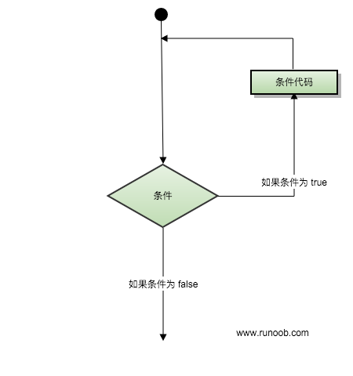
循环类型
CPP 编程语言提供了以下几种循环类型。点击链接查看每个类型的细节。
| 循环类型 | 描述 |
|---|---|
| while 循环 | 当给定条件为真时，重复语句或语句组。它会在执行循环主体之前测试条件。 |
| for 循环 | 多次执行一个语句序列，简化管理循环变量的代码。 |
| do...while 循环 | 除了它是在循环主体结尾测试条件外，其他与 while 语句类似。 |
| 嵌套循环 | 您可以在 while、for 或 do..while 循环内使用一个或多个循环。 |
循环控制语句
循环控制语句更改执行的正常序列。当执行离开一个范围时，所有在该范围中创建的自动对象都会被销毁。
CPP 提供了下列的控制语句。点击链接查看每个语句的细节。
| 控制语句 | 描述 |
|---|---|
| break 语句 | 终止 loop 或 switch 语句，程序流将继续执行紧接着 loop 或 switch 的下一条语句。 |
| continue 语句 | 引起循环跳过主体的剩余部分，立即重新开始测试条件。 |
| goto 语句 | 将控制转移到被标记的语句。但是不建议在程序中使用 goto 语句。 |
无限循环
如果条件永远不为假，则循环将变成无限循环。for 循环在传统意义上可用于实现无限循环。由于构成循环的三个表达式中任何一个都不是必需的，您可以将某些条件表达式留空来构成一个无限循环。
#include <iostream>using namespace std;
int main (){
for( ; ; )
{
printf("This loop will run forever.\n");
}
return 0;}
当条件表达式不存在时，它被假设为真。您也可以设置一个初始值和增量表达式，但是一般情况下，CPP 程序员偏向于使用 for(;;) 结构来表示一个无限循环。
注意：您可以按 Ctrl + C 键终止一个无限循环。
CPP 判断
判断结构要求程序员指定一个或多个要评估或测试的条件，以及条件为真时要执行的语句（必需的）和条件为假时要执行的语句（可选的）。
下面是大多数编程语言中典型的判断结构的一般形式：
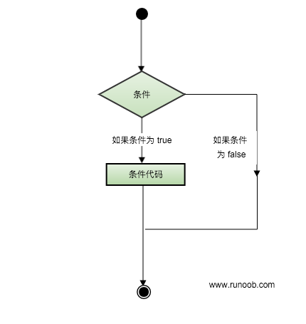
判断语句
CPP 编程语言提供了以下类型的判断语句。点击链接查看每个语句的细节。
| 语句 | 描述 |
|---|---|
| if 语句 | 一个 if 语句 由一个布尔表达式后跟一个或多个语句组成。 |
| if...else 语句 | 一个 if 语句 后可跟一个可选的 else 语句，else 语句在布尔表达式为假时执行。 |
| 嵌套 if 语句 | 您可以在一个 if 或 else if 语句内使用另一个 if 或 else if 语句。 |
| switch 语句 | 一个 switch 语句允许测试一个变量等于多个值时的情况。 |
| 嵌套 switch 语句 | 您可以在一个 switch 语句内使用另一个 switch 语句。 |
? : 运算符
我们已经在前面的章节中讲解了 条件运算符 ? :，可以用来替代 if...else 语句。它的一般形式如下：
Exp1 ? Exp2 : Exp3;
其中，Exp1、Exp2 和 Exp3 是表达式。请注意，冒号的使用和位置。
? 表达式的值是由 Exp1 决定的。如果 Exp1 为真，则计算 Exp2 的值，结果即为整个 ? 表达式的值。如果 Exp1 为假，则计算 Exp3 的值，结果即为整个 ? 表达式的值。
CPP 函数
函数是一组一起执行一个任务的语句。每个 CPP 程序都至少有一个函数，即主函数 main() ，所有简单的程序都可以定义其他额外的函数。
您可以把代码划分到不同的函数中。如何划分代码到不同的函数中是由您来决定的，但在逻辑上，划分通常是根据每个函数执行一个特定的任务来进行的。
函数声明告诉编译器函数的名称、返回类型和参数。函数定义提供了函数的实际主体。
CPP 标准库提供了大量的程序可以调用的内置函数。例如，函数 strcat() 用来连接两个字符串，函数 memcpy() 用来复制内存到另一个位置。
函数还有很多叫法，比如方法、子例程或程序，等等。
定义函数
CPP 中的函数定义的一般形式如下：
return_type function_name( parameter list ){ body of the function}
在 CPP 中，函数由一个函数头和一个函数主体组成。下面列出一个函数的所有组成部分：
- 返回类型：一个函数可以返回一个值。return_type 是函数返回的值的数据类型。有些函数执行所需的操作而不返回值，在这种情况下，return_type 是关键字 void。
- 函数名称：这是函数的实际名称。函数名和参数列表一起构成了函数签名。
- 参数：参数就像是占位符。当函数被调用时，您向参数传递一个值，这个值被称为实际参数。参数列表包括函数参数的类型、顺序、数量。参数是可选的，也就是说，函数可能不包含参数。
- 函数主体：函数主体包含一组定义函数执行任务的语句。
实例
以下是 max() 函数的源代码。该函数有两个参数 num1 和 num2，会返回这两个数中较大的那个数：
// 函数返回两个数中较大的那个数 int max(int num1, int num2) { // 局部变量声明 int result; if (num1 > num2) result = num1; else result = num2; return result; }
函数声明
函数声明会告诉编译器函数名称及如何调用函数。函数的实际主体可以单独定义。
函数声明包括以下几个部分：
return_type function_name( parameter list );
针对上面定义的函数 max()，以下是函数声明：
int max(int num1, int num2);
在函数声明中，参数的名称并不重要，只有参数的类型是必需的，因此下面也是有效的声明：
int max(int, int);
当您在一个源文件中定义函数且在另一个文件中调用函数时，函数声明是必需的。在这种情况下，您应该在调用函数的文件顶部声明函数。
调用函数
创建 CPP 函数时，会定义函数做什么，然后通过调用函数来完成已定义的任务。
当程序调用函数时，程序控制权会转移给被调用的函数。被调用的函数执行已定义的任务，当函数的返回语句被执行时，或到达函数的结束括号时，会把程序控制权交还给主程序。
调用函数时，传递所需参数，如果函数返回一个值，则可以存储返回值。例如：
#include <iostream>using namespace std;
// 函数声明int max(int num1, int num2);
int main (){
// 局部变量声明
int a = 100;
int b = 200;
int ret;
// 调用函数来获取最大值
ret = max(a, b);
cout << "Max value is : " << ret << endl;
return 0;}
// 函数返回两个数中较大的那个数int max(int num1, int num2) {
// 局部变量声明
int result;
if (num1 > num2)
result = num1;
else
result = num2;
return result; }
把 max() 函数和 main() 函数放一块，编译源代码。当运行最后的可执行文件时，会产生下列结果：
Max value is : 200
函数参数
如果函数要使用参数，则必须声明接受参数值的变量。这些变量称为函数的形式参数。
形式参数就像函数内的其他局部变量，在进入函数时被创建，退出函数时被销毁。
当调用函数时，有两种向函数传递参数的方式：
| 调用类型 | 描述 |
|---|---|
| 传值调用 | 该方法把参数的实际值复制给函数的形式参数。在这种情况下，修改函数内的形式参数对实际参数没有影响。 |
| 指针调用 | 该方法把参数的地址复制给形式参数。在函数内，该地址用于访问调用中要用到的实际参数。这意味着，修改形式参数会影响实际参数。 |
| 引用调用 | 该方法把参数的引用复制给形式参数。在函数内，该引用用于访问调用中要用到的实际参数。这意味着，修改形式参数会影响实际参数。 |
默认情况下，CPP 使用传值调用来传递参数。一般来说，这意味着函数内的代码不能改变用于调用函数的参数。之前提到的实例，调用 max() 函数时，使用了相同的方法。
参数的默认值
当您定义一个函数，您可以为参数列表中后边的每一个参数指定默认值。当调用函数时，如果实际参数的值留空，则使用这个默认值。
这是通过在函数定义中使用赋值运算符来为参数赋值的。调用函数时，如果未传递参数的值，则会使用默认值，如果指定了值，则会忽略默认值，使用传递的值。请看下面的实例：
#include <iostream>using namespace std;
int sum(int a, int b=20){
int result;
result = a + b;
return (result);}int main (){
// 局部变量声明
int a = 100;
int b = 200;
int result;
// 调用函数来添加值
result = sum(a, b);
cout << "Total value is :" << result << endl;
// 再次调用函数
result = sum(a);
cout << "Total value is :" << result << endl;
return 0;}
当上面的代码被编译和执行时，它会产生下列结果：
Total value is :300Total value is :120
Lambda 函数与表达式
CPP11 提供了对匿名函数的支持,称为 Lambda 函数(也叫 Lambda 表达式)。
Lambda 表达式把函数看作对象。Lambda 表达式可以像对象一样使用，比如可以将它们赋给变量和作为参数传递，还可以像函数一样对其求值。
Lambda 表达式本质上与函数声明非常类似。Lambda 表达式具体形式如下:
[capture](parameters)->return-type{body}
例如：
[](int x, int y){ return x < y ; }
如果没有参数可以表示为：
[capture](parameters){body}
例如：
[]{ ++global_x; }
在一个更为复杂的例子中，返回类型可以被明确的指定如下：
[](int x, int y) -> int { int z = x + y; return z + x; }
本例中，一个临时的参数 z 被创建用来存储中间结果。如同一般的函数，z 的值不会保留到下一次该不具名函数再次被调用时。
如果 lambda 函数没有传回值（例如 void），其回返类型可被完全忽略。
在Lambda表达式内可以访问当前作用域的变量，这是Lambda表达式的闭包（Closure）行为。 与JavaScript闭包不同，CPP变量传递有传值和传引用的区别。可以通过前面的[]来指定：
[] // 沒有定义任何变量。使用未定义变量会引发错误。[x, &y] // x以传值方式传入（默认），y以引用方式传入。[&] // 任何被使用到的外部变量都隐式地以引用方式加以引用。[=] // 任何被使用到的外部变量都隐式地以传值方式加以引用。[&, x] // x显式地以传值方式加以引用。其余变量以引用方式加以引用。[=, &z] // z显式地以引用方式加以引用。其余变量以传值方式加以引用。
另外有一点需要注意。对于[=]或[&]的形式，lambda 表达式可以直接使用 this 指针。但是，对于[]的形式，如果要使用 this 指针，必须显式传入：
[this]() { this->someFunc(); }();
CPP 数字
通常，当我们需要用到数字时，我们会使用原始的数据类型，如 int、short、long、float 和 double 等等。这些用于数字的数据类型，其可能的值和数值范围，我们已经在 CPP 数据类型一章中讨论过。
CPP 定义数字
我们已经在之前章节的各种实例中定义过数字。下面是一个 CPP 中定义各种类型数字的综合实例：
#include <iostream>using namespace std;
int main (){
// 数字定义
short s;
int i;
long l;
float f;
double d;
// 数字赋值
s = 10;
i = 1000;
l = 1000000;
f = 230.47;
d = 30949.374;
// 数字输出
cout << "short s :" << s << endl;
cout << "int i :" << i << endl;
cout << "long l :" << l << endl;
cout << "float f :" << f << endl;
cout << "double d :" << d << endl;
return 0;}
当上面的代码被编译和执行时，它会产生下列结果：
short s :10int i :1000long l :1000000float f :230.47double d :30949.4
CPP 数学运算
在 CPP 中，除了可以创建各种函数，还包含了各种有用的函数供您使用。这些函数写在标准 C 和 CPP 库中，叫做内置函数。您可以在程序中引用这些函数。
CPP 内置了丰富的数学函数，可对各种数字进行运算。下表列出了 CPP 中一些有用的内置的数学函数。
为了利用这些函数，您需要引用数学头文件
| 序号 | 函数 & 描述 |
|---|---|
| 1 | double cos(double); 该函数返回弧度角（double 型）的余弦。 |
| 2 | double sin(double); 该函数返回弧度角（double 型）的正弦。 |
| 3 | double tan(double); 该函数返回弧度角（double 型）的正切。 |
| 4 | double log(double); 该函数返回参数的自然对数。 |
| 5 | double pow(double, double); 假设第一个参数为 x，第二个参数为 y，则该函数返回 x 的 y 次方。 |
| 6 | double hypot(double, double); 该函数返回两个参数的平方总和的平方根，也就是说，参数为一个直角三角形的两个直角边，函数会返回斜边的长度。 |
| 7 | double sqrt(double); 该函数返回参数的平方根。 |
| 8 | int abs(int); 该函数返回整数的绝对值。 |
| 9 | double fabs(double); 该函数返回任意一个十进制数的绝对值。 |
| 10 | double floor(double); 该函数返回一个小于或等于传入参数的最大整数。 |
下面是一个关于数学运算的简单实例：
#include <iostream>#include <cmath>using namespace std;
int main (){
// 数字定义
short s = 10;
int i = -1000;
long l = 100000;
float f = 230.47;
double d = 200.374;
// 数学运算
cout << "sin(d) :" << sin(d) << endl;
cout << "abs(i) :" << abs(i) << endl;
cout << "floor(d) :" << floor(d) << endl;
cout << "sqrt(f) :" << sqrt(f) << endl;
cout << "pow( d, 2) :" << pow(d, 2) << endl;
return 0;}
当上面的代码被编译和执行时，它会产生下列结果：
sign(d) :-0.634939abs(i) :1000floor(d) :200sqrt(f) :15.1812pow( d, 2 ) :40149.7
CPP 随机数
在许多情况下，需要生成随机数。关于随机数生成器，有两个相关的函数。一个是 rand()，该函数只返回一个伪随机数。生成随机数之前必须先调用 srand() 函数。
下面是一个关于生成随机数的简单实例。实例中使用了 time() 函数来获取系统时间的秒数，通过调用 rand() 函数来生成随机数：
#include <iostream>#include <ctime>#include <cstdlib>using namespace std;
int main (){
int i,j;
// 设置种子
srand( (unsigned)time( NULL ) );
/* 生成 10 个随机数 */
for( i = 0; i < 10; i++ )
{
// 生成实际的随机数
j= rand();
cout <<"随机数： " << j << endl;
}
return 0;}
当上面的代码被编译和执行时，它会产生下列结果：
随机数： 1748144778随机数： 630873888随机数： 2134540646随机数： 219404170随机数： 902129458随机数： 920445370随机数： 1319072661随机数： 257938873随机数： 1256201101随机数： 580322989
CPP 数组
CPP 支持数组数据结构，它可以存储一个固定大小的相同类型元素的顺序集合。数组是用来存储一系列数据，但它往往被认为是一系列相同类型的变量。
数组的声明并不是声明一个个单独的变量，比如 number0、number1、...、number99，而是声明一个数组变量，比如 numbers，然后使用 numbers[0]、numbers[1]、...、numbers[99] 来代表一个个单独的变量。数组中的特定元素可以通过索引访问。
所有的数组都是由连续的内存位置组成。最低的地址对应第一个元素，最高的地址对应最后一个元素。
声明数组
在 CPP 中要声明一个数组，需要指定元素的类型和元素的数量，如下所示：
type arrayName [ arraySize ];
这叫做一维数组。arraySize 必须是一个大于零的整数常量，type 可以是任意有效的 CPP 数据类型。例如，要声明一个类型为 double 的包含 10 个元素的数组 balance，声明语句如下：
double balance[10];
现在 balance 是一个可用的数组，可以容纳 10 个类型为 double 的数字。
初始化数组
在 CPP 中，您可以逐个初始化数组，也可以使用一个初始化语句，如下所示：
double balance[5] = {1000.0, 2.0, 3.4, 17.0, 50.0};
大括号 { } 之间的值的数目不能大于我们在数组声明时在方括号 [ ] 中指定的元素数目。
如果您省略掉了数组的大小，数组的大小则为初始化时元素的个数。因此，如果：
double balance[] = {1000.0, 2.0, 3.4, 17.0, 50.0};
您将创建一个数组，它与前一个实例中所创建的数组是完全相同的。下面是一个为数组中某个元素赋值的实例：
balance[4] = 50.0;
上述的语句把数组中第五个元素的值赋为 50.0。所有的数组都是以 0 作为它们第一个元素的索引，也被称为基索引，数组的最后一个索引是数组的总大小减去 1。以下是上面所讨论的数组的的图形表示：
访问数组元素
数组元素可以通过数组名称加索引进行访问。元素的索引是放在方括号内，跟在数组名称的后边。例如：
double salary = balance[9];
上面的语句将把数组中第 10 个元素的值赋给 salary 变量。下面的实例使用了上述的三个概念，即，声明数组、数组赋值、访问数组：
#include <iostream>using namespace std;
#include <iomanip>using std::setw;
int main (){
int n[ 10 ]; // n 是一个包含 10 个整数的数组
// 初始化数组元素
for ( int i = 0; i < 10; i++ )
{
n[ i ] = i + 100; // 设置元素 i 为 i + 100
}
cout << "Element" << setw( 13 ) << "Value" << endl;
// 输出数组中每个元素的值
for ( int j = 0; j < 10; j++ )
{
cout << setw( 7 )<< j << setw( 13 ) << n[ j ] << endl;
}
return 0;}
上面的程序使用了 setw() 函数来格式化输出。当上面的代码被编译和执行时，它会产生下列结果：
Element Value
0 100
1 101
2 102
3 103
4 104
5 105
6 106
7 107
8 108
9 109
CPP 中数组详解
在 CPP 中，数组是非常重要的，我们需要了解更多有关数组的细节。下面列出了 CPP 程序员必须清楚的一些与数组相关的重要概念：
| 概念 | 描述 |
|---|---|
| 多维数组 | CPP 支持多维数组。多维数组最简单的形式是二维数组。 |
| 指向数组的指针 | 您可以通过指定不带索引的数组名称来生成一个指向数组中第一个元素的指针。 |
| 传递数组给函数 | 您可以通过指定不带索引的数组名称来给函数传递一个指向数组的指针。 |
| 从函数返回数组 | CPP 允许从函数返回数组。 |
CPP 字符串
CPP 提供了以下两种类型的字符串表示形式：
- C 风格字符串
- CPP 引入的 string 类类型
C 风格字符串
C 风格的字符串起源于 C 语言，并在 CPP 中继续得到支持。字符串实际上是使用 null 字符 '\0' 终止的一维字符数组。因此，一个以 null 结尾的字符串，包含了组成字符串的字符。
下面的声明和初始化创建了一个 "Hello" 字符串。由于在数组的末尾存储了空字符，所以字符数组的大小比单词 "Hello" 的字符数多一个。
char greeting[6] = {'H', 'e', 'l', 'l', 'o', '\0'};
依据数组初始化规则，您可以把上面的语句写成以下语句：
char greeting[] = "Hello";
以下是 C/CPP 中定义的字符串的内存表示：
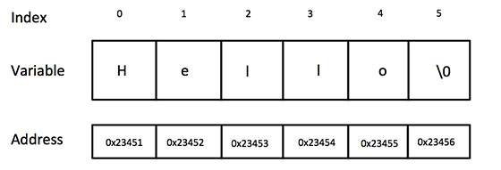
其实，您不需要把 null 字符放在字符串常量的末尾。CPP 编译器会在初始化数组时，自动把 '\0' 放在字符串的末尾。让我们尝试输出上面的字符串：
实例
#include <iostream>
using namespace std;
int main (){
char greeting[6] = {'H', 'e', 'l', 'l', 'o', '\0'};
cout << "Greeting message: "; cout << greeting << endl;
return 0;}
当上面的代码被编译和执行时，它会产生下列结果：
Greeting message: Hello
CPP 中有大量的函数用来操作以 null 结尾的字符串：supports a wide range of functions that manipulate null-terminated strings:
| 序号 | 函数 & 目的 |
|---|---|
| 1 | strcpy(s1, s2); 复制字符串 s2 到字符串 s1。 |
| 2 | strcat(s1, s2); 连接字符串 s2 到字符串 s1 的末尾。 |
| 3 | strlen(s1); 返回字符串 s1 的长度。 |
| 4 | strcmp(s1, s2); 如果 s1 和 s2 是相同的，则返回 0；如果 s1 |
| 5 | strchr(s1, ch); 返回一个指针，指向字符串 s1 中字符 ch 的第一次出现的位置。 |
| 6 | strstr(s1, s2); 返回一个指针，指向字符串 s1 中字符串 s2 的第一次出现的位置。 |
下面的实例使用了上述的一些函数：
实例
#include <iostream>#include <cstring>
using namespace std;
int main (){
char str1[11] = "Hello"; char str2[11] = "World"; char str3[11]; int len ;
// 复制 str1 到 str3
strcpy( str3, str1); cout << "strcpy( str3, str1) : " << str3 << endl;
// 连接 str1 和 str2
strcat( str1, str2); cout << "strcat( str1, str2): " << str1 << endl;
// 连接后，str1 的总长度
len = strlen(str1); cout << "strlen(str1) : " << len << endl;
return 0;}
当上面的代码被编译和执行时，它会产生下列结果：
strcpy( str3, str1) : Hellostrcat( str1, str2): HelloWorldstrlen(str1) : 10
CPP 中的 String 类
CPP 标准库提供了 string 类类型，支持上述所有的操作，另外还增加了其他更多的功能。我们将学习 CPP 标准库中的这个类，现在让我们先来看看下面这个实例：
现在您可能还无法透彻地理解这个实例，因为到目前为止我们还没有讨论类和对象。所以现在您可以只是粗略地看下这个实例，等理解了面向对象的概念之后再回头来理解这个实例。
实例
#include <iostream>#include <string>
using namespace std;
int main (){
string str1 = "Hello"; string str2 = "World"; string str3; int len ;
// 复制 str1 到 str3
str3 = str1; cout << "str3 : " << str3 << endl;
// 连接 str1 和 str2
str3 = str1 + str2; cout << "str1 + str2 : " << str3 << endl;
// 连接后，str3 的总长度
len = str3.size(); cout << "str3.size() : " << len << endl;
return 0;}
当上面的代码被编译和执行时，它会产生下列结果：
str3 : Hellostr1 + str2 : HelloWorldstr3.size() : 10
CPP 指针
学习 CPP 的指针既简单又有趣。通过指针，可以简化一些 CPP 编程任务的执行，还有一些任务，如动态内存分配，没有指针是无法执行的。所以，想要成为一名优秀的 CPP 程序员，学习指针是很有必要的。
正如您所知道的，每一个变量都有一个内存位置，每一个内存位置都定义了可使用连字号（&）运算符访问的地址，它表示了在内存中的一个地址。请看下面的实例，它将输出定义的变量地址：
#include <iostream>using namespace std;int main (){
int var1;
char var2[10];
cout << "var1 变量的地址： ";
cout << &var1 << endl;
cout << "var2 变量的地址： ";
cout << &var2 << endl;
return 0;}
当上面的代码被编译和执行时，它会产生下列结果：
var1 变量的地址： 0xbfebd5c0var2 变量的地址： 0xbfebd5b6
通过上面的实例，我们了解了什么是内存地址以及如何访问它。接下来让我们看看什么是指针。
什么是指针？
指针是一个变量，其值为另一个变量的地址，即，内存位置的直接地址。就像其他变量或常量一样，您必须在使用指针存储其他变量地址之前，对其进行声明。指针变量声明的一般形式为：
type *var-name;
在这里，type 是指针的基类型，它必须是一个有效的 CPP 数据类型，var-name 是指针变量的名称。用来声明指针的星号 * 与乘法中使用的星号是相同的。但是，在这个语句中，星号是用来指定一个变量是指针。以下是有效的指针声明：
int *ip; /* 一个整型的指针 */double *dp; /* 一个 double 型的指针 */float *fp; /* 一个浮点型的指针 */char *ch; /* 一个字符型的指针 */
所有指针的值的实际数据类型，不管是整型、浮点型、字符型，还是其他的数据类型，都是一样的，都是一个代表内存地址的长的十六进制数。不同数据类型的指针之间唯一的不同是，指针所指向的变量或常量的数据类型不同。
CPP 中使用指针
使用指针时会频繁进行以下几个操作：定义一个指针变量、把变量地址赋值给指针、访问指针变量中可用地址的值。这些是通过使用一元运算符 * 来返回位于操作数所指定地址的变量的值。下面的实例涉及到了这些操作：
#include <iostream>using namespace std;int main (){
int var = 20; // 实际变量的声明
int *ip; // 指针变量的声明
ip = &var; // 在指针变量中存储 var 的地址
cout << "Value of var variable: ";
cout << var << endl;
// 输出在指针变量中存储的地址
cout << "Address stored in ip variable: ";
cout << ip << endl;
// 访问指针中地址的值
cout << "Value of *ip variable: ";
cout << *ip << endl;
return 0;}
当上面的代码被编译和执行时，它会产生下列结果：
Value of var variable: 20Address stored in ip variable: 0xbfc601acValue of *ip variable: 20
CPP 指针详解
在 CPP 中，有很多指针相关的概念，这些概念都很简单，但是都很重要。下面列出了 CPP 程序员必须清楚的一些与指针相关的重要概念：
| 概念 | 描述 |
|---|---|
| CPP Null 指针 | CPP 支持空指针。NULL 指针是一个定义在标准库中的值为零的常量。 |
| CPP 指针的算术运算 | 可以对指针进行四种算术运算：++、--、+、- |
| CPP 指针 vs 数组 | 指针和数组之间有着密切的关系。 |
| CPP 指针数组 | 可以定义用来存储指针的数组。 |
| CPP 指向指针的指针 | CPP 允许指向指针的指针。 |
| CPP 传递指针给函数 | 通过引用或地址传递参数，使传递的参数在调用函数中被改变。 |
| CPP 从函数返回指针 | CPP 允许函数返回指针到局部变量、静态变量和动态内存分配。 |
CPP 引用
引用变量是一个别名，也就是说，它是某个已存在变量的另一个名字。一旦把引用初始化为某个变量，就可以使用该引用名称或变量名称来指向变量。
CPP 引用 vs 指针
引用很容易与指针混淆，它们之间有三个主要的不同：
- 不存在空引用。引用必须连接到一块合法的内存。
- 一旦引用被初始化为一个对象，就不能被指向到另一个对象。指针可以在任何时候指向到另一个对象。
- 引用必须在创建时被初始化。指针可以在任何时间被初始化。
CPP 中创建引用
试想变量名称是变量附属在内存位置中的标签，您可以把引用当成是变量附属在内存位置中的第二个标签。因此，您可以通过原始变量名称或引用来访问变量的内容。例如：
int i = 17;
我们可以为 i 声明引用变量，如下所示：
int& r = i;
在这些声明中，& 读作引用。因此，第一个声明可以读作 "r 是一个初始化为 i 的整型引用"，第二个声明可以读作 "s 是一个初始化为 d 的 double 型引用"。下面的实例使用了 int 和 double 引用：
#include <iostream>
using namespace std;
int main (){
// 声明简单的变量
int i;
double d;
// 声明引用变量
int& r = i;
double& s = d;
i = 5;
cout << "Value of i : " << i << endl;
cout << "Value of i reference : " << r << endl;
d = 11.7;
cout << "Value of d : " << d << endl;
cout << "Value of d reference : " << s << endl;
return 0;}
当上面的代码被编译和执行时，它会产生下列结果：
Value of i : 5Value of i reference : 5Value of d : 11.7Value of d reference : 11.7
引用通常用于函数参数列表和函数返回值。下面列出了 CPP 程序员必须清楚的两个与 CPP 引用相关的重要概念：
| 概念 | 描述 |
|---|---|
| 把引用作为参数 | CPP 支持把引用作为参数传给函数，这比传一般的参数更安全。 |
| 把引用作为返回值 | 可以从 CPP 函数中返回引用，就像返回其他数据类型一样。 |
CPP 日期 & 时间
CPP 标准库没有提供所谓的日期类型。CPP 继承了 C 语言用于日期和时间操作的结构和函数。为了使用日期和时间相关的函数和结构，需要在 CPP 程序中引用
有四个与时间相关的类型：clock_t、time_t、size_t 和 tm。类型 clock_t、size_t 和 time_t 能够把系统时间和日期表示为某种整数。
结构类型 tm 把日期和时间以 C 结构的形式保存，tm 结构的定义如下：
struct tm {
int tm_sec; // 秒，正常范围从 0 到 59，但允许至 61
int tm_min; // 分，范围从 0 到 59
int tm_hour; // 小时，范围从 0 到 23
int tm_mday; // 一月中的第几天，范围从 1 到 31
int tm_mon; // 月，范围从 0 到 11
int tm_year; // 自 1900 年起的年数
int tm_wday; // 一周中的第几天，范围从 0 到 6，从星期日算起
int tm_yday; // 一年中的第几天，范围从 0 到 365，从 1 月 1 日算起
int tm_isdst; // 夏令时}
下面是 C/CPP 中关于日期和时间的重要函数。所有这些函数都是 C/CPP 标准库的组成部分，您可以在 CPP 标准库中查看一下各个函数的细节。
| 序号 | 函数 & 描述 |
|---|---|
| 1 | time_t time(time_t *time); 该函数返回系统的当前日历时间，自 1970 年 1 月 1 日以来经过的秒数。如果系统没有时间，则返回 .1。 |
| 2 | char *ctime(const time_t *time); 该返回一个表示当地时间的字符串指针，字符串形式 day month year hours:minutes:seconds year\n\0。 |
| 3 | struct tm *localtime(const time_t *time); 该函数返回一个指向表示本地时间的 tm 结构的指针。 |
| 4 | clock_t clock(void); 该函数返回程序执行起（一般为程序的开头），处理器时钟所使用的时间。如果时间不可用，则返回 .1。 |
| 5 | char * asctime ( const struct tm * time ); 该函数返回一个指向字符串的指针，字符串包含了 time 所指向结构中存储的信息，返回形式为：day month date hours:minutes:seconds year\n\0。 |
| 6 | struct tm *gmtime(const time_t *time); 该函数返回一个指向 time 的指针，time 为 tm 结构，用协调世界时（UTC）也被称为格林尼治标准时间（GMT）表示。 |
| 7 | time_t mktime(struct tm *time); 该函数返回日历时间，相当于 time 所指向结构中存储的时间。 |
| 8 | double difftime ( time_t time2, time_t time1 ); 该函数返回 time1 和 time2 之间相差的秒数。 |
| 9 | size_t strftime(); 该函数可用于格式化日期和时间为指定的格式。 |
当前日期和时间
下面的实例获取当前系统的日期和时间，包括本地时间和协调世界时（UTC）。
#include <iostream>#include <ctime>using namespace std;int main( ){
// 基于当前系统的当前日期/时间
time_t now = time(0);
// 把 now 转换为字符串形式
char* dt = ctime(&now);
cout << "本地日期和时间：" << dt << endl;
// 把 now 转换为 tm 结构
tm *gmtm = gmtime(&now);
dt = asctime(gmtm);
cout << "UTC 日期和时间："<< dt << endl;}
当上面的代码被编译和执行时，它会产生下列结果：
本地日期和时间：Sat Jan 8 20:07:41 2011UTC 日期和时间：Sun Jan 9 03:07:41 2011
使用结构 tm 格式化时间
tm 结构在 C/CPP 中处理日期和时间相关的操作时，显得尤为重要。tm 结构以 C 结构的形式保存日期和时间。大多数与时间相关的函数都使用了 tm 结构。下面的实例使用了 tm 结构和各种与日期和时间相关的函数。
在练习使用结构之前，需要对 C 结构有基本的了解，并懂得如何使用箭头 -> 运算符来访问结构成员。
#include <iostream>#include <ctime>using namespace std;int main( ){
// 基于当前系统的当前日期/时间
time_t now = time(0);
cout << "Number of sec since January 1,1970:" << now << endl;
tm *ltm = localtime(&now);
// 输出 tm 结构的各个组成部分
cout << "Year: "<< 1900 + ltm->tm_year << endl;
cout << "Month: "<< 1 + ltm->tm_mon<< endl;
cout << "Day: "<< ltm->tm_mday << endl;
cout << "Time: "<< 1 + ltm->tm_hour << ":";
cout << 1 + ltm->tm_min << ":";
cout << 1 + ltm->tm_sec << endl;}
当上面的代码被编译和执行时，它会产生下列结果：
Number of sec since January 1, 1970:1294548238Year: 2011Month: 1Day: 8Time: 22: 44:59
CPP 基本的输入输出
CPP 标准库提供了一组丰富的输入/输出功能，我们将在后续的章节进行介绍。本章将讨论 CPP 编程中最基本和最常见的 I/O 操作。
CPP 的 I/O 发生在流中，流是字节序列。如果字节流是从设备（如键盘、磁盘驱动器、网络连接等）流向内存，这叫做输入操作。如果字节流是从内存流向设备（如显示屏、打印机、磁盘驱动器、网络连接等），这叫做输出操作。
I/O 库头文件
下列的头文件在 CPP 编程中很重要。
| 头文件 | 函数和描述 |
|---|---|
| 该文件定义了 cin、cout、cerr 和 clog 对象，分别对应于标准输入流、标准输出流、非缓冲标准错误流和缓冲标准错误流。 | |
| 该文件通过所谓的参数化的流操纵器（比如 setw 和 setprecision），来声明对执行标准化 I/O 有用的服务。 | |
| 该文件为用户控制的文件处理声明服务。我们将在文件和流的相关章节讨论它的细节。 |
标准输出流（cout）
预定义的对象 cout 是 ostream 类的一个实例。cout 对象"连接"到标准输出设备，通常是显示屏。cout 是与流插入运算符 << 结合使用的，如下所示：
#include <iostream> using namespace std; int main( ){ char str[] = "Hello CPP"; cout << "Value of str is : " << str << endl;}
当上面的代码被编译和执行时，它会产生下列结果：
Value of str is : Hello CPP
CPP 编译器根据要输出变量的数据类型，选择合适的流插入运算符来显示值。<< 运算符被重载来输出内置类型（整型、浮点型、double 型、字符串和指针）的数据项。
流插入运算符 << 在一个语句中可以多次使用，如上面实例中所示，endl 用于在行末添加一个换行符。
标准输入流（cin）
预定义的对象 cin 是 istream 类的一个实例。cin 对象附属到标准输入设备，通常是键盘。cin 是与流提取运算符 >> 结合使用的，如下所示：
#include <iostream> using namespace std; int main( ){
char name[50]; cout << "请输入您的名称： ";
cin >> name; cout << "您的名称是： " << name << endl; }
当上面的代码被编译和执行时，它会提示用户输入名称。当用户输入一个值，并按回车键，就会看到下列结果：
请输入您的名称： cplusplus您的名称是： cplusplus
CPP 编译器根据要输入值的数据类型，选择合适的流提取运算符来提取值，并把它存储在给定的变量中。
流提取运算符 >> 在一个语句中可以多次使用，如果要求输入多个数据，可以使用如下语句：
cin >> name >> age;
这相当于下面两个语句：
cin >> name;cin >> age;
标准错误流（cerr）
预定义的对象 cerr 是 ostream 类的一个实例。cerr 对象附属到标准错误设备，通常也是显示屏，但是 cerr 对象是非缓冲的，且每个流插入到 cerr 都会立即输出。
cerr 也是与流插入运算符 << 结合使用的，如下所示：
#include <iostream>
using namespace std;
int main( ){
char str[] = "Unable to read....";
cerr << "Error message : " << str << endl;}
当上面的代码被编译和执行时，它会产生下列结果：
Error message : Unable to read....
标准日志流（clog）
预定义的对象 clog 是 ostream 类的一个实例。clog 对象附属到标准错误设备，通常也是显示屏，但是 clog 对象是缓冲的。这意味着每个流插入到 clog 都会先存储在缓冲在，直到缓冲填满或者缓冲区刷新时才会输出。
clog 也是与流插入运算符 << 结合使用的，如下所示：
#include <iostream>
using namespace std;
int main( ){
char str[] = "Unable to read....";
clog << "Error message : " << str << endl;}
当上面的代码被编译和执行时，它会产生下列结果：
Error message : Unable to read....
通过这些小实例，我们无法区分 cout、cerr 和 clog 的差异，但在编写和执行大型程序时，它们之间的差异就变得非常明显。所以良好的编程实践告诉我们，使用 cerr 流来显示错误消息，而其他的日志消息则使用 clog 流来输出。
CPP 数据结构
C/CPP 数组允许定义可存储相同类型数据项的变量，但是结构是 CPP 中另一种用户自定义的可用的数据类型，它允许您存储不同类型的数据项。
结构用于表示一条记录，假设您想要跟踪图书馆中书本的动态，您可能需要跟踪每本书的下列属性：
- Title ：标题
- Author ：作者
- Subject ：类目
- Book ID ：书的 ID
定义结构
为了定义结构，您必须使用 struct 语句。struct 语句定义了一个包含多个成员的新的数据类型，struct 语句的格式如下：
struct type_name {member_type1 member_name1;member_type2 member_name2;member_type3 member_name3;..} object_names;
type_name 是结构体类型的名称，member_type1 member_name1 是标准的变量定义，比如 int i; 或者 float f; 或者其他有效的变量定义。在结构定义的末尾，最后一个分号之前，您可以指定一个或多个结构变量，这是可选的。下面是声明一个结构体类型 Books，变量为 book：
struct Books{ char title[50]; char author[50]; char subject[100]; int book_id;} book;
访问结构成员
为了访问结构的成员，我们使用成员访问运算符（.）。成员访问运算符是结构变量名称和我们要访问的结构成员之间的一个句号。
下面的实例演示了结构的用法：
实例
#include <iostream>#include <cstring>
using namespace std;
// 声明一个结构体类型 Books struct Books{
char title[50]; char author[50]; char subject[100]; int book_id;};
int main( ){
Books Book1; // 定义结构体类型 Books 的变量 Book1
Books Book2; // 定义结构体类型 Books 的变量 Book2
// Book1 详述
strcpy( Book1.title, "CPP 教程"); strcpy( Book1.author, "Runoob");
strcpy( Book1.subject, "编程语言"); Book1.book_id = 12345;
// Book2 详述
strcpy( Book2.title, "CSS 教程"); strcpy( Book2.author, "Runoob"); strcpy( Book2.subject, "前端技术"); Book2.book_id = 12346;
// 输出 Book1 信息
cout << "第一本书标题 : " << Book1.title <<endl; cout << "第一本书作者 : " << Book1.author <<endl; cout << "第一本书类目 : " << Book1.subject <<endl; cout << "第一本书 ID : " << Book1.book_id <<endl;
// 输出 Book2 信息
cout << "第二本书标题 : " << Book2.title <<endl; cout << "第二本书作者 : " << Book2.author <<endl; cout << "第二本书类目 : " << Book2.subject <<endl; cout << "第二本书 ID : " << Book2.book_id <<endl;
return 0;}
实例中定义了结构体类似 Books 及其两个变量 Book1 和 Book2。当上面的代码被编译和执行时，它会产生下列结果：
第一本书标题 : CPP 教程第一本书作者 : Runoob第一本书类目 : 编程语言第一本书 ID : 12345第二本书标题 : CSS 教程第二本书作者 : Runoob第二本书类目 : 前端技术第二本书 ID : 12346
结构作为函数参数
您可以把结构作为函数参数，传参方式与其他类型的变量或指针类似。您可以使用上面实例中的方式来访问结构变量：
实例
#include <iostream>#include <cstring>
using namespace std;void printBook( struct Books book );
// 声明一个结构体类型 Books struct Books{
char title[50]; char author[50]; char subject[100]; int book_id;};
int main( ){
Books Book1; // 定义结构体类型 Books 的变量 Book1
Books Book2; // 定义结构体类型 Books 的变量 Book2
// Book1 详述
strcpy( Book1.title, "CPP 教程"); strcpy( Book1.author, "Runoob");
strcpy( Book1.subject, "编程语言"); Book1.book_id = 12345;
// Book2 详述
strcpy( Book2.title, "CSS 教程"); strcpy( Book2.author, "Runoob");
strcpy( Book2.subject, "前端技术"); Book2.book_id = 12346;
// 输出 Book1 信息
printBook( Book1 );
// 输出 Book2 信息
printBook( Book2 );
return 0;}void printBook( struct Books book ){
cout << "书标题 : " << book.title <<endl; cout << "书作者 : "
<< book.author <<endl; cout << "书类目 : " << book.subject <<endl;
cout << "书 ID : " << book.book_id <<endl;}
当上面的代码被编译和执行时，它会产生下列结果：
书标题 : CPP 教程书作者 : Runoob书类目 : 编程语言书 ID : 12345书标题 : CSS 教程书作者 : Runoob书类目 : 前端技术书 ID : 12346
指向结构的指针
您可以定义指向结构的指针，方式与定义指向其他类型变量的指针相似，如下所示：
struct Books *struct_pointer;
现在，您可以在上述定义的指针变量中存储结构变量的地址。为了查找结构变量的地址，请把 & 运算符放在结构名称的前面，如下所示：
struct_pointer = &Book1;
为了使用指向该结构的指针访问结构的成员，您必须使用 -> 运算符，如下所示：
struct_pointer->title;
让我们使用结构指针来重写上面的实例，这将有助于您理解结构指针的概念：
实例
#include <iostream>#include <cstring>
using namespace std;void printBook( struct Books *book );
struct Books{
char title[50]; char author[50]; char subject[100]; int book_id;};
int main( ){
Books Book1; // 定义结构体类型 Books 的变量 Book1
Books Book2; // 定义结构体类型 Books 的变量 Book2
// Book1 详述
strcpy( Book1.title, "CPP 教程"); strcpy( Book1.author, "Runoob");
strcpy( Book1.subject, "编程语言"); Book1.book_id = 12345;
// Book2 详述
strcpy( Book2.title, "CSS 教程"); strcpy( Book2.author, "Runoob");
strcpy( Book2.subject, "前端技术"); Book2.book_id = 12346;
// 通过传 Book1 的地址来输出 Book1 信息
printBook( &Book1 );
// 通过传 Book2 的地址来输出 Book2 信息
printBook( &Book2 );
return 0;}// 该函数以结构指针作为参数void printBook( struct Books *book ){
cout << "书标题 : " << book->title <<endl; cout << "书作者 : "
<< book->author <<endl; cout << "书类目 : " << book->subject <<endl;
cout << "书 ID : " << book->book_id <<endl;}
当上面的代码被编译和执行时，它会产生下列结果：
书标题 : CPP 教程书作者 : Runoob书类目 : 编程语言书 ID : 12345书标题 : CSS 教程书作者 : Runoob书类目 : 前端技术书 ID : 12346
typedef 关键字
下面是一种更简单的定义结构的方式，您可以为创建的类型取一个"别名"。例如：
typedef struct{
char title[50];
char author[50];
char subject[100];
int book_id;}Books;
现在，您可以直接使用 Books 来定义 Books 类型的变量，而不需要使用 struct 关键字。下面是实例：
Books Book1, Book2;
您可以使用 typedef 关键字来定义非结构类型，如下所示：
typedef long int *pint32;
pint32 x, y, z;
x, y 和 z 都是指向长整型 long int 的指针。
CPP 类 & 对象
CPP 在 C 语言的基础上增加了面向对象编程，CPP 支持面向对象程序设计。类是 CPP 的核心特性，通常被称为用户定义的类型。
类用于指定对象的形式，它包含了数据表示法和用于处理数据的方法。类中的数据和方法称为类的成员。函数在一个类被称为类的成员。
CPP 类定义
定义一个类，本质上是定义一个数据类型的蓝图。这实际上并没有定义任何数据，但它定义了类的名称意味着什么，也就是说，它定义了类的对象包括了什么，以及可以在这个对象上执行哪些操作。
类定义是以关键字 class 开头，后跟类的名称。类的主体是包含在一对花括号中。类定义后必须跟着一个分号或一个声明列表。例如，我们使用关键字 class 定义 Box 数据类型，如下所示：
class Box{ public: double length; // Length of a box double breadth; // Breadth of a box double height; // Height of a box};
关键字 public 确定了类成员的访问属性。在类对象作用域内，公共成员在类的外部是可访问的。您也可以指定类的成员为 private 或 protected，这个我们稍后会进行讲解。
定义 CPP 对象
类提供了对象的蓝图，所以基本上，对象是根据类来创建的。声明类的对象，就像声明基本类型的变量一样。下面的语句声明了类 Box 的两个对象：
Box Box1; // 声明 Box1，类型为 BoxBox Box2; // 声明 Box2，类型为 Box
对象 Box1 和 Box2 都有它们各自的数据成员。
访问数据成员
类的对象的公共数据成员可以使用直接成员访问运算符 (.) 来访问。为了更好地理解这些概念，让我们尝试一下下面的实例：
#include <iostream>using namespace std;class Box{
public:
double length; // 长度
double breadth; // 宽度
double height; // 高度};int main( ){
Box Box1; // 声明 Box1，类型为 Box
Box Box2; // 声明 Box2，类型为 Box
double volume = 0.0; // 用于存储体积
// box 1 详述
Box1.height = 5.0;
Box1.length = 6.0;
Box1.breadth = 7.0;
// box 2 详述
Box2.height = 10.0;
Box2.length = 12.0;
Box2.breadth = 13.0;
// box 1 的体积
volume = Box1.height * Box1.length * Box1.breadth;
cout << "Box1 的体积：" << volume <<endl;
// box 2 的体积
volume = Box2.height * Box2.length * Box2.breadth;
cout << "Box2 的体积：" << volume <<endl;
return 0;}
当上面的代码被编译和执行时，它会产生下列结果：
Box1 的体积：210Box2 的体积：1560
需要注意的是，私有的成员和受保护的成员不能使用直接成员访问运算符 (.) 来直接访问。我们将在后续的教程中学习如何访问私有成员和受保护的成员。
类 & 对象详解
到目前为止，我们已经对 CPP 的类和对象有了基本的了解。下面的列表中还列出了其他一些 CPP 类和对象相关的概念，可以点击相应的链接进行学习。
| 概念 | 描述 |
|---|---|
| 类成员函数 | 类的成员函数是指那些把定义和原型写在类定义内部的函数，就像类定义中的其他变量一样。 |
| 类访问修饰符 | 类成员可以被定义为 public、private 或 protected。默认情况下是定义为 private。 |
| 构造函数 & 析构函数 | 类的构造函数是一种特殊的函数，在创建一个新的对象时调用。类的析构函数也是一种特殊的函数，在删除所创建的对象时调用。 |
| CPP 拷贝构造函数 | 拷贝构造函数，是一种特殊的构造函数，它在创建对象时，是使用同一类中之前创建的对象来初始化新创建的对象。 |
| CPP 友元函数 | 友元函数可以访问类的 private 和 protected 成员。 |
| CPP 内联函数 | 通过内联函数，编译器试图在调用函数的地方扩展函数体中的代码。 |
| CPP 中的 this 指针 | 每个对象都有一个特殊的指针 this，它指向对象本身。 |
| CPP 中指向类的指针 | 指向类的指针方式如同指向结构的指针。实际上，类可以看成是一个带有函数的结构。 |
| CPP 类的静态成员 | 类的数据成员和函数成员都可以被声明为静态的。 |
CPP 继承
面向对象程序设计中最重要的一个概念是继承。继承允许我们依据另一个类来定义一个类，这使得创建和维护一个应用程序变得更容易。这样做，也达到了重用代码功能和提高执行时间的效果。
当创建一个类时，您不需要重新编写新的数据成员和成员函数，只需指定新建的类继承了一个已有的类的成员即可。这个已有的类称为基类，新建的类称为派生类。
继承代表了 is a 关系。例如，哺乳动物是动物，狗是哺乳动物，因此，狗是动物，等等。
基类 & 派生类
一个类可以派生自多个类，这意味着，它可以从多个基类继承数据和函数。定义一个派生类，我们使用一个类派生列表来指定基类。类派生列表以一个或多个基类命名，形式如下：
class derived-class: access-specifier base-class
其中，访问修饰符 access-specifier 是 public、protected 或 private 其中的一个，base-class 是之前定义过的某个类的名称。如果未使用访问修饰符 access-specifier，则默认为 private。
假设有一个基类 Shape，Rectangle 是它的派生类，如下所示：
#include <iostream>
using namespace std;// 基类class Shape {
public:
void setWidth(int w)
{
width = w;
}
void setHeight(int h)
{
height = h;
}
protected:
int width;
int height;};// 派生类class Rectangle: public Shape{
public:
int getArea()
{
return (width * height);
} };int main(void){
Rectangle Rect;
Rect.setWidth(5);
Rect.setHeight(7);
// 输出对象的面积
cout << "Total area: " << Rect.getArea() << endl;
return 0;}
当上面的代码被编译和执行时，它会产生下列结果：
Total area: 35
访问控制和继承
派生类可以访问基类中所有的非私有成员。因此基类成员如果不想被派生类的成员函数访问，则应在基类中声明为 private。
我们可以根据访问权限总结出不同的访问类型，如下所示：
| 访问 | public | protected | private |
|---|---|---|---|
| 同一个类 | yes | yes | yes |
| 派生类 | yes | yes | no |
| 外部的类 | yes | no | no |
一个派生类继承了所有的基类方法，但下列情况除外：
- 基类的构造函数、析构函数和拷贝构造函数。
- 基类的重载运算符。
- 基类的友元函数。
继承类型
当一个类派生自基类，该基类可以被继承为 public、protected 或 private 几种类型。继承类型是通过上面讲解的访问修饰符 access-specifier 来指定的。
我们几乎不使用 protected 或 private 继承，通常使用 public 继承。当使用不同类型的继承时，遵循以下几个规则：
- 公有继承（public）：当一个类派生自公有基类时，基类的公有成员也是派生类的公有成员，基类的保护成员也是派生类的保护成员，基类的私有成员不能直接被派生类访问，但是可以通过调用基类的公有和保护成员来访问。
- 保护继承（protected）： 当一个类派生自保护基类时，基类的公有和保护成员将成为派生类的保护成员。
- 私有继承（private）：当一个类派生自私有基类时，基类的公有和保护成员将成为派生类的私有成员。
多继承
多继承即一个子类可以有多个父类，它继承了多个父类的特性。
CPP 类可以从多个类继承成员，语法如下：
class <派生类名>:<继承方式1><基类名1>,<继承方式2><基类名2>,…{<派生类类体>};
其中，访问修饰符继承方式是 public、protected 或 private 其中的一个，用来修饰每个基类，各个基类之间用逗号分隔，如上所示。现在让我们一起看看下面的实例：
#include <iostream>
using namespace std;// 基类 Shapeclass Shape {
public:
void setWidth(int w)
{
width = w;
}
void setHeight(int h)
{
height = h;
}
protected:
int width;
int height;};// 基类 PaintCostclass PaintCost {
public:
int getCost(int area)
{
return area * 70;
} };// 派生类class Rectangle: public Shape, public PaintCost{
public:
int getArea()
{
return (width * height);
} };int main(void){
Rectangle Rect;
int area;
Rect.setWidth(5);
Rect.setHeight(7);
area = Rect.getArea();
// 输出对象的面积
cout << "Total area: " << Rect.getArea() << endl;
// 输出总花费
cout << "Total paint cost: $" << Rect.getCost(area) << endl;
return 0;}
当上面的代码被编译和执行时，它会产生下列结果：
Total area: 35Total paint cost: $2450
CPP 重载运算符和重载函数
CPP 允许在同一作用域中的某个函数和运算符指定多个定义，分别称为函数重载和运算符重载。
重载声明是指一个与之前已经在该作用域内声明过的函数或方法具有相同名称的声明，但是它们的参数列表和定义（实现）不相同。
当您调用一个重载函数或重载运算符时，编译器通过把您所使用的参数类型与定义中的参数类型进行比较，决定选用最合适的定义。选择最合适的重载函数或重载运算符的过程，称为重载决策。
CPP 中的函数重载
在同一个作用域内，可以声明几个功能类似的同名函数，但是这些同名函数的形式参数（指参数的个数、类型或者顺序）必须不同。您不能仅通过返回类型的不同来重载函数。
下面的实例中，同名函数 print() 被用于输出不同的数据类型：
#include <iostream>using namespace std;
class printData
{
public:
void print(int i) {
cout << "Printing int: " << i << endl;
}
void print(double f) {
cout << "Printing float: " << f << endl;
}
void print(char* c) {
cout << "Printing character: " << c << endl;
} };int main(void){
printData pd;
// Call print to print integer
pd.print(5);
// Call print to print float
pd.print(500.263);
// Call print to print character
pd.print("Hello CPP");
return 0;}
当上面的代码被编译和执行时，它会产生下列结果：
Printing int: 5Printing float: 500.263Printing character: Hello CPP
CPP 中的运算符重载
您可以重定义或重载大部分 CPP 内置的运算符。这样，您就能使用自定义类型的运算符。
重载的运算符是带有特殊名称的函数，函数名是由关键字 operator 和其后要重载的运算符符号构成的。与其他函数一样，重载运算符有一个返回类型和一个参数列表。
Box operator+(const Box&);
声明加法运算符用于把两个 Box 对象相加，返回最终的 Box 对象。大多数的重载运算符可被定义为普通的非成员函数或者被定义为类成员函数。如果我们定义上面的函数为类的非成员函数，那么我们需要为每次操作传递两个参数，如下所示：
Box operator+(const Box&, const Box&);
下面的实例使用成员函数演示了运算符重载的概念。在这里，对象作为参数进行传递，对象的属性使用 this 运算符进行访问，如下所示：
#include <iostream>using namespace std;class Box{
public:
double getVolume(void)
{
return length * breadth * height;
}
void setLength( double len )
{
length = len;
}
void setBreadth( double bre )
{
breadth = bre;
}
void setHeight( double hei )
{
height = hei;
}
// 重载 + 运算符，用于把两个 Box 对象相加
Box operator+(const Box& b)
{
Box box;
box.length = this->length + b.length;
box.breadth = this->breadth + b.breadth;
box.height = this->height + b.height;
return box;
}
private:
double length; // 长度
double breadth; // 宽度
double height; // 高度};// 程序的主函数int main( ){
Box Box1; // 声明 Box1，类型为 Box
Box Box2; // 声明 Box2，类型为 Box
Box Box3; // 声明 Box3，类型为 Box
double volume = 0.0; // 把体积存储在该变量中
// Box1 详述
Box1.setLength(6.0);
Box1.setBreadth(7.0);
Box1.setHeight(5.0);
// Box2 详述
Box2.setLength(12.0);
Box2.setBreadth(13.0);
Box2.setHeight(10.0);
// Box1 的体积
volume = Box1.getVolume();
cout << "Volume of Box1 : " << volume <<endl;
// Box2 的体积
volume = Box2.getVolume();
cout << "Volume of Box2 : " << volume <<endl;
// 把两个对象相加，得到 Box3
Box3 = Box1 + Box2;
// Box3 的体积
volume = Box3.getVolume();
cout << "Volume of Box3 : " << volume <<endl;
return 0;}
当上面的代码被编译和执行时，它会产生下列结果：
Volume of Box1 : 210Volume of Box2 : 1560Volume of Box3 : 5400
可重载运算符/不可重载运算符
下面是可重载的运算符列表：
| + | - | * | / | % | ^ | ||
|---|---|---|---|---|---|---|---|
| & | \ | ~ | ! | , | = | ||
| < | > | <= | >= | ++ | -- | ||
| << | >> | == | != | && | \ | \ | |
| += | -= | /= | %= | ^= | &= | ||
| \ | = | *= | <<= | >>= | [] | () | |
| -> | ->* | new | new [] | delete | delete [] |
下面是不可重载的运算符列表：
| :: | .* | . | ?: |
|---|---|---|---|
运算符重载实例
下面提供了各种运算符重载的实例，帮助您更好地理解重载的概念。
| 序号 | 运算符和实例 |
|---|---|
| 1 | 一元运算符重载 |
| 2 | 二元运算符重载 |
| 3 | 关系运算符重载 |
| 4 | 输入/输出运算符重载 |
| 5 | ++ 和 -- 运算符重载 |
| 6 | 赋值运算符重载 |
| 7 | 函数调用运算符 () 重载 |
| 8 | 下标运算符 [] 重载 |
| 9 | 类成员访问运算符 -> 重载 |
CPP 多态
多态按字面的意思就是多种形态。当类之间存在层次结构，并且类之间是通过继承关联时，就会用到多态。
CPP 多态意味着调用成员函数时，会根据调用函数的对象的类型来执行不同的函数。
下面的实例中，基类 Shape 被派生为两个类，如下所示：
#include <iostream> using namespace std;
class Shape {
protected:
int width, height;
public:
Shape( int a=0, int b=0)
{
width = a;
height = b;
}
int area()
{
cout << "Parent class area :" <<endl;
return 0;
} };class Rectangle: public Shape{
public:
Rectangle( int a=0, int b=0):Shape(a, b) { }
int area ()
{
cout << "Rectangle class area :" <<endl;
return (width * height);
} };class Triangle: public Shape{
public:
Triangle( int a=0, int b=0):Shape(a, b) { }
int area ()
{
cout << "Triangle class area :" <<endl;
return (width * height / 2);
} };// 程序的主函数int main( ){
Shape *shape;
Rectangle rec(10,7);
Triangle tri(10,5);
// 存储矩形的地址
shape = &rec;
// 调用矩形的求面积函数 area
shape->area();
// 存储三角形的地址
shape = &tri;
// 调用三角形的求面积函数 area
shape->area();
return 0;}
当上面的代码被编译和执行时，它会产生下列结果：
Parent class areaParent class area
导致错误输出的原因是，调用函数 area() 被编译器设置为基类中的版本，这就是所谓的静态多态，或静态链接 - 函数调用在程序执行前就准备好了。有时候这也被称为早绑定，因为 area() 函数在程序编译期间就已经设置好了。
但现在，让我们对程序稍作修改，在 Shape 类中，area() 的声明前放置关键字 virtual，如下所示：
class Shape {
protected:
int width, height;
public:
Shape( int a=0, int b=0)
{
width = a;
height = b;
}
virtual int area()
{
cout << "Parent class area :" <<endl;
return 0;
} };
修改后，当编译和执行前面的实例代码时，它会产生以下结果：
Rectangle class areaTriangle class area
此时，编译器看的是指针的内容，而不是它的类型。因此，由于 tri 和 rec 类的对象的地址存储在 *shape 中，所以会调用各自的 area() 函数。
正如您所看到的，每个子类都有一个函数 area() 的独立实现。这就是多态的一般使用方式。有了多态，您可以有多个不同的类，都带有同一个名称但具有不同实现的函数，函数的参数甚至可以是相同的。
虚函数
虚函数 是在基类中使用关键字 virtual 声明的函数。在派生类中重新定义基类中定义的虚函数时，会告诉编译器不要静态链接到该函数。
我们想要的是在程序中任意点可以根据所调用的对象类型来选择调用的函数，这种操作被称为动态链接，或后期绑定。
纯虚函数
您可能想要在基类中定义虚函数，以便在派生类中重新定义该函数更好地适用于对象，但是您在基类中又不能对虚函数给出有意义的实现，这个时候就会用到纯虚函数。
我们可以把基类中的虚函数 area() 改写如下：
class Shape {
protected:
int width, height;
public:
Shape( int a=0, int b=0)
{
width = a;
height = b;
}
// pure virtual function
virtual int area() = 0;};
= 0 告诉编译器，函数没有主体，上面的虚函数是纯虚函数。
CPP 数据抽象
数据抽象是指，只向外界提供关键信息，并隐藏其后台的实现细节，即只表现必要的信息而不呈现细节。
数据抽象是一种依赖于接口和实现分离的编程（设计）技术。
让我们举一个现实生活中的真实例子，比如一台电视机，您可以打开和关闭、切换频道、调整音量、添加外部组件（如喇叭、录像机、DVD 播放器），但是您不知道它的内部实现细节，也就是说，您并不知道它是如何通过缆线接收信号，如何转换信号，并最终显示在屏幕上。
因此，我们可以说电视把它的内部实现和外部接口分离开了，您无需知道它的内部实现原理，直接通过它的外部接口（比如电源按钮、遥控器、声量控制器）就可以操控电视。
现在，让我们言归正传，就 CPP 编程而言，CPP 类为数据抽象提供了可能。它们向外界提供了大量用于操作对象数据的公共方法，也就是说，外界实际上并不清楚类的内部实现。
例如，您的程序可以调用 sort() 函数，而不需要知道函数中排序数据所用到的算法。实际上，函数排序的底层实现会因库的版本不同而有所差异，只要接口不变，函数调用就可以照常工作。
在 CPP 中，我们使用类来定义我们自己的抽象数据类型（ADT）。您可以使用类 ostream 的 cout 对象来输出数据到标准输出，如下所示：
#include <iostream>using namespace std;int main( ){ cout << "Hello CPP" <<endl; return 0;}
在这里，您不需要理解 cout 是如何在用户的屏幕上显示文本。您只需要知道公共接口即可，cout 的底层实现可以自由改变。
访问标签强制抽象
在 CPP 中，我们使用访问标签来定义类的抽象接口。一个类可以包含零个或多个访问标签：
- 使用公共标签定义的成员都可以访问该程序的所有部分。一个类型的数据抽象视图是由它的公共成员来定义的。
- 使用私有标签定义的成员无法访问到使用类的代码。私有部分对使用类型的代码隐藏了实现细节。
访问标签出现的频率没有限制。每个访问标签指定了紧随其后的成员定义的访问级别。指定的访问级别会一直有效，直到遇到下一个访问标签或者遇到类主体的关闭右括号为止。
数据抽象的好处
数据抽象有两个重要的优势：
- 类的内部受到保护，不会因无意的用户级错误导致对象状态受损。
- 类实现可能随着时间的推移而发生变化，以便应对不断变化的需求，或者应对那些要求不改变用户级代码的错误报告。
如果只在类的私有部分定义数据成员，编写该类的作者就可以随意更改数据。如果实现发生改变，则只需要检查类的代码，看看这个改变会导致哪些影响。如果数据是公有的，则任何直接访问旧表示形式的数据成员的函数都可能受到影响。
数据抽象的实例
CPP 程序中，任何带有公有和私有成员的类都可以作为数据抽象的实例。请看下面的实例：
#include <iostream>using namespace std;class Adder{
public:
// 构造函数
Adder(int i = 0)
{
total = i;
}
// 对外的接口
void addNum(int number)
{
total += number;
}
// 对外的接口
int getTotal()
{
return total;
};
private:
// 对外隐藏的数据
int total;};int main( ){
Adder a;
a.addNum(10);
a.addNum(20);
a.addNum(30);
cout << "Total " << a.getTotal() <<endl;
return 0;}
当上面的代码被编译和执行时，它会产生下列结果：
Total 60
上面的类把数字相加，并返回总和。公有成员 addNum 和 getTotal 是对外的接口，用户需要知道它们以便使用类。私有成员 total 是用户不需要了解的，但又是类能正常工作所必需的。
设计策略
抽象把代码分离为接口和实现。所以在设计组件时，必须保持接口独立于实现，这样，如果改变底层实现，接口也将保持不变。
在这种情况下，不管任何程序使用接口，接口都不会受到影响，只需要将最新的实现重新编译即可。
CPP 数据封装
所有的 CPP 程序都有以下两个基本要素：
- 程序语句（代码）：这是程序中执行动作的部分，它们被称为函数。
- 程序数据：数据是程序的信息，会受到程序函数的影响。
封装是面向对象编程中的把数据和操作数据的函数绑定在一起的一个概念，这样能避免受到外界的干扰和误用，从而确保了安全。数据封装引申出了另一个重要的 OOP 概念，即数据隐藏。
数据封装是一种把数据和操作数据的函数捆绑在一起的机制，数据抽象是一种仅向用户暴露接口而把具体的实现细节隐藏起来的机制。
CPP 通过创建类来支持封装和数据隐藏（public、protected、private）。我们已经知道，类包含私有成员（private）、保护成员（protected）和公有成员（public）成员。默认情况下，在类中定义的所有项目都是私有的。例如：
class Box{
public:
double getVolume(void)
{
return length * breadth * height;
}
private:
double length; // 长度
double breadth; // 宽度
double height; // 高度
};
变量 length、breadth 和 height 都是私有的（private）。这意味着它们只能被 Box 类中的其他成员访问，而不能被程序中其他部分访问。这是实现封装的一种方式。
为了使类中的成员变成公有的（即，程序中的其他部分也能访问），必须在这些成员前使用 public 关键字进行声明。所有定义在 public 标识符后边的变量或函数可以被程序中所有其他的函数访问。
把一个类定义为另一个类的友元类，会暴露实现细节，从而降低了封装性。理想的做法是尽可能地对外隐藏每个类的实现细节。
数据封装的实例
CPP 程序中，任何带有公有和私有成员的类都可以作为数据封装和数据抽象的实例。请看下面的实例：
#include <iostream>using namespace std;class Adder{
public:
// 构造函数
Adder(int i = 0)
{
total = i;
}
// 对外的接口
void addNum(int number)
{
total += number;
}
// 对外的接口
int getTotal()
{
return total;
};
private:
// 对外隐藏的数据
int total;};int main( ){
Adder a;
a.addNum(10);
a.addNum(20);
a.addNum(30);
cout << "Total " << a.getTotal() <<endl;
return 0;}
当上面的代码被编译和执行时，它会产生下列结果：
Total 60
上面的类把数字相加，并返回总和。公有成员 addNum 和 getTotal 是对外的接口，用户需要知道它们以便使用类。私有成员 total 是对外隐藏的，用户不需要了解它，但它又是类能正常工作所必需的。
设计策略
通常情况下，我们都会设置类成员状态为私有（private），除非我们真的需要将其暴露，这样才能保证良好的封装性。
这通常应用于数据成员，但它同样适用于所有成员，包括虚函数。
CPP 接口（抽象类）
接口描述了类的行为和功能，而不需要完成类的特定实现。
CPP 接口是使用抽象类来实现的，抽象类与数据抽象互不混淆，数据抽象是一个把实现细节与相关的数据分离开的概念。
如果类中至少有一个函数被声明为纯虚函数，则这个类就是抽象类。纯虚函数是通过在声明中使用 "= 0" 来指定的，如下所示：
class Box{
public:
// 纯虚函数
virtual double getVolume() = 0;
private:
double length; // 长度
double breadth; // 宽度
double height; // 高度};
设计抽象类（通常称为 ABC）的目的，是为了给其他类提供一个可以继承的适当的基类。抽象类不能被用于实例化对象，它只能作为接口使用。如果试图实例化一个抽象类的对象，会导致编译错误。
因此，如果一个 ABC 的子类需要被实例化，则必须实现每个虚函数，这也意味着 CPP 支持使用 ABC 声明接口。如果没有在派生类中重载纯虚函数，就尝试实例化该类的对象，会导致编译错误。
可用于实例化对象的类被称为具体类。
抽象类的实例
请看下面的实例，基类 Shape 提供了一个接口 getArea()，在两个派生类 Rectangle 和 Triangle 中分别实现了 getArea()：
#include <iostream>
using namespace std;
// 基类class Shape {public:
// 提供接口框架的纯虚函数
virtual int getArea() = 0;
void setWidth(int w)
{
width = w;
}
void setHeight(int h)
{
height = h;
}protected:
int width;
int height;};
// 派生类class Rectangle: public Shape{public:
int getArea()
{
return (width * height);
} };class Triangle: public Shape{public:
int getArea()
{
return (width * height)/2;
} };
int main(void){
Rectangle Rect;
Triangle Tri;
Rect.setWidth(5);
Rect.setHeight(7);
// 输出对象的面积
cout << "Total Rectangle area: " << Rect.getArea() << endl;
Tri.setWidth(5);
Tri.setHeight(7);
// 输出对象的面积
cout << "Total Triangle area: " << Tri.getArea() << endl;
return 0;}
当上面的代码被编译和执行时，它会产生下列结果：
Total Rectangle area: 35Total Triangle area: 17
从上面的实例中，我们可以看到一个抽象类是如何定义一个接口 getArea()，两个派生类是如何通过不同的计算面积的算法来实现这个相同的函数。
设计策略
面向对象的系统可能会使用一个抽象基类为所有的外部应用程序提供一个适当的、通用的、标准化的接口。然后，派生类通过继承抽象基类，就把所有类似的操作都继承下来。
外部应用程序提供的功能（即公有函数）在抽象基类中是以纯虚函数的形式存在的。这些纯虚函数在相应的派生类中被实现。
这个架构也使得新的应用程序可以很容易地被添加到系统中，即使是在系统被定义之后依然可以如此。
CPP 文件和流
到目前为止，我们已经使用了 iostream 标准库，它提供了 cin 和 cout 方法分别用于从标准输入读取流和向标准输出写入流。
本教程介绍如何从文件读取流和向文件写入流。这就需要用到 CPP 中另一个标准库 fstream，它定义了三个新的数据类型：
| 数据类型 | 描述 |
|---|---|
| ofstream | 该数据类型表示输出文件流，用于创建文件并向文件写入信息。 |
| ifstream | 该数据类型表示输入文件流，用于从文件读取信息。 |
| fstream | 该数据类型通常表示文件流，且同时具有 ofstream 和 ifstream 两种功能，这意味着它可以创建文件，向文件写入信息，从文件读取信息。 |
要在 CPP 中进行文件处理，必须在 CPP 源代码文件中包含头文件
打开文件
在从文件读取信息或者向文件写入信息之前，必须先打开文件。ofstream 和 fstream 对象都可以用来打开文件进行写操作，如果只需要打开文件进行读操作，则使用 ifstream 对象。
下面是 open() 函数的标准语法，open() 函数是 fstream、ifstream 和 ofstream 对象的一个成员。
void open(const char *filename, ios::openmode mode);
在这里，open() 成员函数的第一参数指定要打开的文件的名称和位置，第二个参数定义文件被打开的模式。
| 模式标志 | 描述 |
|---|---|
| ios::app | 追加模式。所有写入都追加到文件末尾。 |
| ios::ate | 文件打开后定位到文件末尾。 |
| ios::in | 打开文件用于读取。 |
| ios::out | 打开文件用于写入。 |
| ios::trunc | 如果该文件已经存在，其内容将在打开文件之前被截断，即把文件长度设为 0。 |
您可以把以上两种或两种以上的模式结合使用。例如，如果您想要以写入模式打开文件，并希望截断文件，以防文件已存在，那么您可以使用下面的语法：
ofstream outfile;outfile.open("file.dat", ios::out | ios::trunc );
类似地，您如果想要打开一个文件用于读写，可以使用下面的语法：
fstream afile;afile.open("file.dat", ios::out | ios::in );
关闭文件
当 CPP 程序终止时，它会自动关闭刷新所有流，释放所有分配的内存，并关闭所有打开的文件。但程序员应该养成一个好习惯，在程序终止前关闭所有打开的文件。
下面是 close() 函数的标准语法，close() 函数是 fstream、ifstream 和 ofstream 对象的一个成员。
void close();
写入文件
在 CPP 编程中，我们使用流插入运算符（ << ）向文件写入信息，就像使用该运算符输出信息到屏幕上一样。唯一不同的是，在这里您使用的是 ofstream 或 fstream 对象，而不是 cout 对象。
读取文件
在 CPP 编程中，我们使用流提取运算符（ >> ）从文件读取信息，就像使用该运算符从键盘输入信息一样。唯一不同的是，在这里您使用的是 ifstream 或 fstream 对象，而不是 cin 对象。
读取 & 写入实例
下面的 CPP 程序以读写模式打开一个文件。在向文件 afile.dat 写入用户输入的信息之后，程序从文件读取信息，并将其输出到屏幕上：
#include <fstream>#include <iostream>using namespace std;
int main (){
char data[100];
// 以写模式打开文件
ofstream outfile;
outfile.open("afile.dat");
cout << "Writing to the file" << endl;
cout << "Enter your name: ";
cin.getline(data, 100);
// 向文件写入用户输入的数据
outfile << data << endl;
cout << "Enter your age: ";
cin >> data;
cin.ignore();
// 再次向文件写入用户输入的数据
outfile << data << endl;
// 关闭打开的文件
outfile.close();
// 以读模式打开文件
ifstream infile;
infile.open("afile.dat");
cout << "Reading from the file" << endl;
infile >> data;
// 在屏幕上写入数据
cout << data << endl;
// 再次从文件读取数据，并显示它
infile >> data;
cout << data << endl;
// 关闭打开的文件
infile.close();
return 0;}
当上面的代码被编译和执行时，它会产生下列输入和输出：
$./a.outWriting to the fileEnter your name: ZaraEnter your age: 9Reading from the fileZara9
上面的实例中使用了 cin 对象的附加函数，比如 getline()函数从外部读取一行，ignore() 函数会忽略掉之前读语句留下的多余字符。
文件位置指针
istream 和 ostream 都提供了用于重新定位文件位置指针的成员函数。这些成员函数包括关于 istream 的 seekg（"seek get"）和关于 ostream 的 seekp（"seek put"）。
seekg 和 seekp 的参数通常是一个长整型。第二个参数可以用于指定查找方向。查找方向可以是 ios::beg（默认的，从流的开头开始定位），也可以是 ios::cur（从流的当前位置开始定位），也可以是 ios::end（从流的末尾开始定位）。
文件位置指针是一个整数值，指定了从文件的起始位置到指针所在位置的字节数。下面是关于定位 "get" 文件位置指针的实例：
// 定位到 fileObject 的第 n 个字节（假设是 ios::beg）fileObject.seekg( n );// 把文件的读指针从 fileObject 当前位置向后移 n 个字节fileObject.seekg( n, ios::cur );// 把文件的读指针从 fileObject 末尾往回移 n 个字节fileObject.seekg( n, ios::end );// 定位到 fileObject 的末尾fileObject.seekg( 0, ios::end );
CPP 异常处理
异常是程序在执行期间产生的问题。CPP 异常是指在程序运行时发生的特殊情况，比如尝试除以零的操作。
异常提供了一种转移程序控制权的方式。CPP 异常处理涉及到三个关键字：try、catch、throw。
- throw: 当问题出现时，程序会抛出一个异常。这是通过使用 throw 关键字来完成的。
- catch: 在您想要处理问题的地方，通过异常处理程序捕获异常。catch 关键字用于捕获异常。
- try: try 块中的代码标识将被激活的特定异常。它后面通常跟着一个或多个 catch 块。
如果有一个块抛出一个异常，捕获异常的方法会使用 try 和 catch 关键字。try 块中放置可能抛出异常的代码，try 块中的代码被称为保护代码。使用 try/catch 语句的语法如下所示：
try{
// 保护代码}catch( ExceptionName e1 ){
// catch 块}catch( ExceptionName e2 ){
// catch 块}catch( ExceptionName eN ){
// catch 块}
如果 try 块在不同的情境下会抛出不同的异常，这个时候可以尝试罗列多个 catch 语句，用于捕获不同类型的异常。
抛出异常
您可以使用 throw 语句在代码块中的任何地方抛出异常。throw 语句的操作数可以是任意的表达式，表达式的结果的类型决定了抛出的异常的类型。
以下是尝试除以零时抛出异常的实例：
double division(int a, int b){
if( b == 0 )
{
throw "Division by zero condition!";
}
return (a/b);}
捕获异常
catch 块跟在 try 块后面，用于捕获异常。您可以指定想要捕捉的异常类型，这是由 catch 关键字后的括号内的异常声明决定的。
try{
// 保护代码}catch( ExceptionName e ){
// 处理 ExceptionName 异常的代码}
上面的代码会捕获一个类型为 ExceptionName 的异常。如果您想让 catch 块能够处理 try 块抛出的任何类型的异常，则必须在异常声明的括号内使用省略号 ...，如下所示：
try{
// 保护代码}catch(...){
// 能处理任何异常的代码}
下面是一个实例，抛出一个除以零的异常，并在 catch 块中捕获该异常。
#include <iostream>using namespace std;double division(int a, int b){
if( b == 0 )
{
throw "Division by zero condition!";
}
return (a/b);}int main (){
int x = 50;
int y = 0;
double z = 0;
try {
z = division(x, y);
cout << z << endl;
}catch (const char* msg) {
cerr << msg << endl;
}
return 0;}
由于我们抛出了一个类型为 const char* 的异常，因此，当捕获该异常时，我们必须在 catch 块中使用 const char*。当上面的代码被编译和执行时，它会产生下列结果：
Division by zero condition!
CPP 标准的异常
CPP 提供了一系列标准的异常，定义在
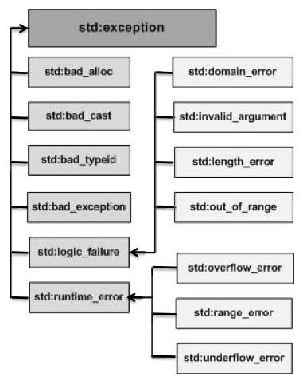
下表是对上面层次结构中出现的每个异常的说明：
定义新的异常
您可以通过继承和重载 exception 类来定义新的异常。下面的实例演示了如何使用 std::exception 类来实现自己的异常：
#include <iostream>#include <exception>using namespace std;struct MyException : public exception{
const char * what () const throw ()
{
return "CPP Exception";
} };
int main(){
try
{
throw MyException();
}
catch(MyException& e)
{
std::cout << "MyException caught" << std::endl;
std::cout << e.what() << std::endl;
}
catch(std::exception& e)
{
//其他的错误
} }
这将产生以下结果：
MyException caught
CPP Exception
在这里，what() 是异常类提供的一个公共方法，它已被所有子异常类重载。这将返回异常产生的原因。
CPP 动态内存
了解动态内存在 CPP 中是如何工作的是成为一名合格的 CPP 程序员必不可少的。CPP 程序中的内存分为两个部分：
- 栈：在函数内部声明的所有变量都将占用栈内存。
- 堆：这是程序中未使用的内存，在程序运行时可用于动态分配内存。
很多时候，您无法提前预知需要多少内存来存储某个定义变量中的特定信息，所需内存的大小需要在运行时才能确定。
在 CPP 中，您可以使用特殊的运算符为给定类型的变量在运行时分配堆内的内存，这会返回所分配的空间地址。这种运算符即 new 运算符。
如果您不需要动态分配内存，可以使用 delete 运算符，删除之前由 new 运算符分配的内存。
new 和 delete 运算符
下面是使用 new 运算符来为任意的数据类型动态分配内存的通用语法：
new data-type;
在这里，data-type 可以是包括数组在内的任意内置的数据类型，也可以是包括类或结构在内的用户自定义的任何数据类型。让我们先来看下内置的数据类型。例如，我们可以定义一个指向 double 类型的指针，然后请求内存，该内存在执行时被分配。我们可以按照下面的语句使用 new 运算符来完成这点：
double* pvalue = NULL; // 初始化为 null 的指针pvalue = new double; // 为变量请求内存
如果自由存储区已被用完，可能无法成功分配内存。所以建议检查 new 运算符是否返回 NULL 指针，并采取以下适当的操作：
double* pvalue = NULL;if( !(pvalue = new double )){
cout << "Error: out of memory." <<endl;
exit(1);}
malloc() 函数在 C 语言中就出现了，在 CPP 中仍然存在，但建议尽量不要使用 malloc() 函数。new 与 malloc() 函数相比，其主要的优点是，new 不只是分配了内存，它还创建了对象。
在任何时候，当您觉得某个已经动态分配内存的变量不再需要使用时，您可以使用 delete 操作符释放它所占用的内存，如下所示：
delete pvalue; // 释放 pvalue 所指向的内存
下面的实例中使用了上面的概念，演示了如何使用 new 和 delete 运算符：
#include <iostream>using namespace std;int main (){
double* pvalue = NULL; // 初始化为 null 的指针
pvalue = new double; // 为变量请求内存
*pvalue = 29494.99; // 在分配的地址存储值
cout << "Value of pvalue : " << *pvalue << endl;
delete pvalue; // 释放内存
return 0;}
当上面的代码被编译和执行时，它会产生下列结果：
Value of pvalue : 29495
数组的动态内存分配
假设我们要为一个字符数组（一个有 20 个字符的字符串）分配内存，我们可以使用上面实例中的语法来为数组动态地分配内存，如下所示：
char* pvalue = NULL; // 初始化为 null 的指针pvalue = new char[20]; // 为变量请求内存
要删除我们刚才创建的数组，语句如下：
delete [] pvalue; // 删除 pvalue 所指向的数组
下面是 new 操作符的通用语法，可以为多维数组分配内存，如下所示：
int ROW = 2;int COL = 3;double **pvalue = new double* [ROW]; // 为行分配内存// 为列分配内存for(int i = 0; i < COL; i++) {
pvalue[i] = new double[COL];}
释放多维数组内存：
for(int i = 0; i < COL; i++) {
delete[] pvalue[i];}delete [] pvalue;
对象的动态内存分配
对象与简单的数据类型没有什么不同。例如，请看下面的代码，我们将使用一个对象数组来理清这一概念：
#include <iostream>using namespace std;class Box{
public:
Box() {
cout << "调用构造函数！" <<endl;
}
~Box() {
cout << "调用析构函数！" <<endl;
} };int main( ){
Box* myBoxArray = new Box[4];
delete [] myBoxArray; // Delete array
return 0;}
如果要为一个包含四个 Box 对象的数组分配内存，构造函数将被调用 4 次，同样地，当删除这些对象时，析构函数也将被调用相同的次数（4次）。
当上面的代码被编译和执行时，它会产生下列结果：
调用构造函数！调用构造函数！调用构造函数！调用构造函数！调用析构函数！调用析构函数！调用析构函数！调用析构函数！
CPP 命名空间
假设这样一种情况，当一个班上有两个名叫 Zara 的学生时，为了明确区分它们，我们在使用名字之外，不得不使用一些额外的信息，比如他们的家庭住址，或者他们父母的名字等等。
同样的情况也出现在 CPP 应用程序中。例如，您可能会写一个名为 xyz() 的函数，在另一个可用的库中也存在一个相同的函数 xyz()。这样，编译器就无法判断您所使用的是哪一个 xyz() 函数。
因此，引入了命名空间这个概念，专门用于解决上面的问题，它可作为附加信息来区分不同库中相同名称的函数、类、变量等。使用了命名空间即定义了上下文。本质上，命名空间就是定义了一个范围。
定义命名空间
命名空间的定义使用关键字 namespace，后跟命名空间的名称，如下所示：
namespace namespace_name { // 代码声明}
为了调用带有命名空间的函数或变量，需要在前面加上命名空间的名称，如下所示：
name::code; // code 可以是变量或函数
让我们来看看命名空间如何为变量或函数等实体定义范围：
#include <iostream>using namespace std;// 第一个命名空间namespace first_space{
void func(){
cout << "Inside first_space" << endl;
} }// 第二个命名空间namespace second_space{
void func(){
cout << "Inside second_space" << endl;
} }int main (){
// 调用第一个命名空间中的函数
first_space::func();
// 调用第二个命名空间中的函数
second_space::func();
return 0;}
当上面的代码被编译和执行时，它会产生下列结果：
Inside first_spaceInside second_space
using 指令
您可以使用 using namespace 指令，这样在使用命名空间时就可以不用在前面加上命名空间的名称。这个指令会告诉编译器，后续的代码将使用指定的命名空间中的名称。
#include <iostream>using namespace std;// 第一个命名空间namespace first_space{
void func(){
cout << "Inside first_space" << endl;
} }// 第二个命名空间namespace second_space{
void func(){
cout << "Inside second_space" << endl;
} }using namespace first_space;int main (){
// 调用第一个命名空间中的函数
func();
return 0;}
当上面的代码被编译和执行时，它会产生下列结果：
Inside first_space
using 指令也可以用来指定命名空间中的特定项目。例如，如果您只打算使用 std 命名空间中的 cout 部分，您可以使用如下的语句：
using std::cout;
随后的代码中，在使用 cout 时就可以不用加上命名空间名称作为前缀，但是 std 命名空间中的其他项目仍然需要加上命名空间名称作为前缀，如下所示：
#include <iostream>using std::cout;int main (){
cout << "std::endl is used with std!" << std::endl;
return 0;}
当上面的代码被编译和执行时，它会产生下列结果：
std::endl is used with std!
using 指令引入的名称遵循正常的范围规则。名称从使用 using 指令开始是可见的，直到该范围结束。此时，在范围以外定义的同名实体是隐藏的。
不连续的命名空间
命名空间可以定义在几个不同的部分中，因此命名空间是由几个单独定义的部分组成的。一个命名空间的各个组成部分可以分散在多个文件中。
所以，如果命名空间中的某个组成部分需要请求定义在另一个文件中的名称，则仍然需要声明该名称。下面的命名空间定义可以是定义一个新的命名空间，也可以是为已有的命名空间增加新的元素：
namespace namespace_name {
// 代码声明}
嵌套的命名空间
命名空间可以嵌套，您可以在一个命名空间中定义另一个命名空间，如下所示：
namespace namespace_name1 {
// 代码声明
namespace namespace_name2 {
// 代码声明
} }
您可以通过使用 :: 运算符来访问嵌套的命名空间中的成员：
// 访问 namespace_name2 中的成员using namespace namespace_name1::namespace_name2;// 访问 namespace:name1 中的成员using namespace namespace_name1;
在上面的语句中，如果使用的是 namespace_name1，那么在该范围内 namespace_name2 中的元素也是可用的，如下所示：
#include <iostream>using namespace std;// 第一个命名空间namespace first_space{
void func(){
cout << "Inside first_space" << endl;
}
// 第二个命名空间
namespace second_space{
void func(){
cout << "Inside second_space" << endl;
}
} }using namespace first_space::second_space;int main (){
// 调用第二个命名空间中的函数
func();
return 0;}
当上面的代码被编译和执行时，它会产生下列结果：
Inside second_space
CPP 模板
模板是泛型编程的基础，泛型编程即以一种独立于任何特定类型的方式编写代码。
模板是创建泛型类或函数的蓝图或公式。库容器，比如迭代器和算法，都是泛型编程的例子，它们都使用了模板的概念。
每个容器都有一个单一的定义，比如 向量，我们可以定义许多不同类型的向量，比如 vector
您可以使用模板来定义函数和类，接下来让我们一起来看看如何使用。
函数模板
模板函数定义的一般形式如下所示：
template <class type> ret-type func-name(parameter list){ // 函数的主体}
在这里，type 是函数所使用的数据类型的占位符名称。这个名称可以在函数定义中使用。
下面是函数模板的实例，返回两个数种的最大值：
#include <iostream>#include <string>using namespace std;template <typename T>inline T const& Max (T const& a, T const& b) {
return a < b ? b:a; } int main (){
int i = 39;
int j = 20;
cout << "Max(i, j): " << Max(i, j) << endl;
double f1 = 13.5;
double f2 = 20.7;
cout << "Max(f1, f2): " << Max(f1, f2) << endl;
string s1 = "Hello";
string s2 = "World";
cout << "Max(s1, s2): " << Max(s1, s2) << endl;
return 0;}
当上面的代码被编译和执行时，它会产生下列结果：
Max(i, j): 39Max(f1, f2): 20.7Max(s1, s2): World
类模板
正如我们定义函数模板一样，我们也可以定义类模板。泛型类声明的一般形式如下所示：
template <class type> class class-name {...}
在这里，type 是占位符类型名称，可以在类被实例化的时候进行指定。您可以使用一个逗号分隔的列表来定义多个泛型数据类型。
下面的实例定义了类 Stack<>，并实现了泛型方法来对元素进行入栈出栈操作：
#include <iostream>#include <vector>#include <cstdlib>#include <string>#include <stdexcept>using namespace std;template <class T>class Stack {
private:
vector<T> elems; // 元素
public:
void push(T const&); // 入栈
void pop(); // 出栈
T top() const; // 返回栈顶元素
bool empty() const{ // 如果为空则返回真。
return elems.empty();
} }; template <class T>void Stack<T>::push (T const& elem) {
// 追加传入元素的副本
elems.push_back(elem); } template <class T>void Stack<T>::pop () {
if (elems.empty()) {
throw out_of_range("Stack<>::pop(): empty stack");
}
// 删除最后一个元素
elems.pop_back(); } template <class T>T Stack<T>::top () const {
if (elems.empty()) {
throw out_of_range("Stack<>::top(): empty stack");
}
// 返回最后一个元素的副本
return elems.back(); } int main() {
try {
Stack<int> intStack; // int 类型的栈
Stack<string> stringStack; // string 类型的栈
// 操作 int 类型的栈
intStack.push(7);
cout << intStack.top() <<endl;
// 操作 string 类型的栈
stringStack.push("hello");
cout << stringStack.top() << std::endl;
stringStack.pop();
stringStack.pop();
}
catch (exception const& ex) {
cerr << "Exception: " << ex.what() <<endl;
return -1;
} }
当上面的代码被编译和执行时，它会产生下列结果：
7helloException: Stack<>::pop(): empty stack
CPP 预处理器
预处理器是一些指令，指示编译器在实际编译之前所需完成的预处理。
所有的预处理器指令都是以井号（#）开头，只有空格字符可以出现在预处理指令之前。预处理指令不是 CPP 语句，所以它们不会以分号（;）结尾。
我们已经看到，之前所有的实例中都有 #include 指令。这个宏用于把头文件包含到源文件中。
CPP 还支持很多预处理指令，比如 #include、#define、#if、#else、#line 等，让我们一起看看这些重要指令。
#define 预处理
#define 预处理指令用于创建符号常量。该符号常量通常称为宏，指令的一般形式是：
#define macro-name replacement-text
当这一行代码出现在一个文件中时，在该文件中后续出现的所有宏都将会在程序编译之前被替换为 replacement-text。例如：
#include <iostream>using namespace std;#define PI 3.14159int main (){ cout << "Value of PI :" << PI << endl; return 0;}
现在，让我们测试这段代码，看看预处理的结果。假设源代码文件已经存在，接下来使用 -E 选项进行编译，并把结果重定向到 test.p。现在，如果您查看 test.p 文件，将会看到它已经包含大量的信息，而且在文件底部的值被改为如下：
$gcc -E test.cpp > test.p...int main (){ cout << "Value of PI :" << 3.14159 << endl; return 0;}
函数宏
您可以使用 #define 来定义一个带有参数的宏，如下所示：
#include <iostream>using namespace std;#define MIN(a,b) (a<b ? a : b)int main (){
int i, j;
i = 100;
j = 30;
cout <<"较小的值为：" << MIN(i, j) << endl;
return 0;}
当上面的代码被编译和执行时，它会产生下列结果：
较小的值为：30
条件编译
有几个指令可以用来有选择地对部分程序源代码进行编译。这个过程被称为条件编译。
条件预处理器的结构与 if 选择结构很像。请看下面这段预处理器的代码：
#ifndef NULL #define NULL 0#endif
您可以只在调试时进行编译，调试开关可以使用一个宏来实现，如下所示：
#ifdef DEBUG cerr <<"Variable x = " << x << endl;#endif
如果在指令 #ifdef DEBUG 之前已经定义了符号常量 DEBUG，则会对程序中的 cerr 语句进行编译。您可以使用 #if 0 语句注释掉程序的一部分，如下所示：
#if 0 不进行编译的代码#endif
让我们尝试下面的实例：
#include <iostream>using namespace std;#define DEBUG#define MIN(a,b) (((a)<(b)) ? a : b)int main (){
int i, j;
i = 100;
j = 30;#ifdef DEBUG
cerr <<"Trace: Inside main function" << endl;#endif#if 0
/* 这是注释部分 */
cout << MKSTR(HELLO CPP) << endl;#endif
cout <<"The minimum is " << MIN(i, j) << endl;#ifdef DEBUG
cerr <<"Trace: Coming out of main function" << endl;#endif
return 0;}
当上面的代码被编译和执行时，它会产生下列结果：
Trace: Inside main functionThe minimum is 30Trace: Coming out of main function
# 和 ## 运算符
# 和 ## 预处理运算符在 CPP 和 ANSI/ISO C 中都是可用的。# 运算符会把 replacement-text 令牌转换为用引号引起来的字符串。
请看下面的宏定义：
#include <iostream>using namespace std;#define MKSTR( x ) #xint main (){ cout << MKSTR(HELLO CPP) << endl; return 0;}
当上面的代码被编译和执行时，它会产生下列结果：
HELLO CPP
让我们来看看它是如何工作的。不难理解，CPP 预处理器把下面这行：
cout << MKSTR(HELLO CPP) << endl;
转换成了：
cout << "HELLO CPP" << endl;
## 运算符用于连接两个令牌。下面是一个实例：
#define CONCAT( x, y ) x ## y
当 CONCAT 出现在程序中时，它的参数会被连接起来，并用来取代宏。例如，程序中 CONCAT(HELLO, CPP) 会被替换为 "HELLO CPP"，如下面实例所示。
#include <iostream>using namespace std;#define concat(a, b) a ## bint main(){ int xy = 100; cout << concat(x, y); return 0;}
当上面的代码被编译和执行时，它会产生下列结果：
100
让我们来看看它是如何工作的。不难理解，CPP 预处理器把下面这行：
cout << concat(x, y);
转换成了：
cout << xy;
CPP 中的预定义宏
CPP 提供了下表所示的一些预定义宏：
| 宏 | 描述 |
|---|---|
| LINE | 这会在程序编译时包含当前行号。 |
| FILE | 这会在程序编译时包含当前文件名。 |
| DATE | 这会包含一个形式为 month/day/year 的字符串，它表示把源文件转换为目标代码的日期。 |
| TIME | 这会包含一个形式为 hour:minute:second 的字符串，它表示程序被编译的时间。 |
让我们看看上述这些宏的实例：
#include <iostream>using namespace std;int main (){
cout << "Value of __LINE__ : " << __LINE__ << endl;
cout << "Value of __FILE__ : " << __FILE__ << endl;
cout << "Value of __DATE__ : " << __DATE__ << endl;
cout << "Value of __TIME__ : " << __TIME__ << endl;
return 0;}
当上面的代码被编译和执行时，它会产生下列结果：
Value of __LINE__ : 6Value of __FILE__ : test.cppValue of __DATE__ : Feb 28 2011Value of __TIME__ : 18:52:48
CPP 信号处理
信号是由操作系统传给进程的中断，会提早终止一个程序。在 UNIX、LINUX、Mac OS X 或 Windows 系统上，可以通过按 Ctrl+C 产生中断。
有些信号不能被程序捕获，但是下表所列信号可以在程序中捕获，并可以基于信号采取适当的动作。这些信号是定义在 CPP 头文件
| 信号 | 描述 |
|---|---|
| SIGABRT | 程序的异常终止，如调用 abort。 |
| SIGFPE | 错误的算术运算，比如除以零或导致溢出的操作。 |
| SIGILL | 检测非法指令。 |
| SIGINT | 接收到交互注意信号。 |
| SIGSEGV | 非法访问内存。 |
| SIGTERM | 发送到程序的终止请求。 |
signal() 函数
CPP 信号处理库提供了 signal 函数，用来捕获突发事件。以下是 signal() 函数的语法：
void (*signal (int sig, void (*func)(int)))(int);
这个函数接收两个参数：第一个参数是一个整数，代表了信号的编号；第二个参数是一个指向信号处理函数的指针。
让我们编写一个简单的 CPP 程序，使用 signal() 函数捕获 SIGINT 信号。不管您想在程序中捕获什么信号，您都必须使用 signal 函数来注册信号，并将其与信号处理程序相关联。看看下面的实例：
#include <iostream>#include <csignal>using namespace std;void signalHandler( int signum ){
cout << "Interrupt signal (" << signum << ") received.\n";
// 清理并关闭
// 终止程序
exit(signum); }int main (){
// 注册信号 SIGINT 和信号处理程序
signal(SIGINT, signalHandler);
while(1){
cout << "Going to sleep...." << endl;
sleep(1);
}
return 0;}
当上面的代码被编译和执行时，它会产生下列结果：
Going to sleep....Going to sleep....Going to sleep....
现在，按 Ctrl+C 来中断程序，您会看到程序捕获信号，程序打印如下内容并退出：
Going to sleep....Going to sleep....Going to sleep....Interrupt signal (2) received.
raise() 函数
您可以使用函数 raise() 生成信号，该函数带有一个整数信号编号作为参数，语法如下：
int raise (signal sig);
在这里，sig 是要发送的信号的编号，这些信号包括：SIGINT、SIGABRT、SIGFPE、SIGILL、SIGSEGV、SIGTERM、SIGHUP。以下是我们使用 raise() 函数内部生成信号的实例：
#include <iostream>#include <csignal>using namespace std;void signalHandler( int signum ){
cout << "Interrupt signal (" << signum << ") received.\n";
// 清理并关闭
// 终止程序
exit(signum); }int main (){
int i = 0;
// 注册信号 SIGINT 和信号处理程序
signal(SIGINT, signalHandler);
while(++i){
cout << "Going to sleep...." << endl;
if( i == 3 ){
raise( SIGINT);
}
sleep(1);
}
return 0;}
当上面的代码被编译和执行时，它会产生下列结果，并会自动退出：
Going to sleep....Going to sleep....Going to sleep....Interrupt signal (2) received.
CPP 多线程
多线程是多任务处理的一种特殊形式，多任务处理允许让电脑同时运行两个或两个以上的程序。一般情况下，两种类型的多任务处理：基于进程和基于线程。
- 基于进程的多任务处理是程序的并发执行。
- 基于线程的多任务处理是同一程序的片段的并发执行。
多线程程序包含可以同时运行的两个或多个部分。这样的程序中的每个部分称为一个线程，每个线程定义了一个单独的执行路径。
本教程假设您使用的是 Linux 操作系统，我们要使用 POSIX 编写多线程 CPP 程序。POSIX Threads 或 Pthreads 提供的 API 可在多种类 Unix POSIX 系统上可用，比如 FreeBSD、NetBSD、GNU/Linux、Mac OS X 和 Solaris。
创建线程
下面的程序，我们可以用它来创建一个 POSIX 线程：
#include <pthread.h>pthread_create (thread, attr, start_routine, arg)
在这里，pthread_create 创建一个新的线程，并让它可执行。下面是关于参数的说明：
| 参数 | 描述 |
|---|---|
| thread | 指向线程标识符指针。 |
| attr | 一个不透明的属性对象，可以被用来设置线程属性。您可以指定线程属性对象，也可以使用默认值 NULL。 |
| start_routine | 线程运行函数起始地址，一旦线程被创建就会执行。 |
| arg | 运行函数的参数。它必须通过把引用作为指针强制转换为 void 类型进行传递。如果没有传递参数，则使用 NULL。 |
创建线程成功时，函数返回 0，若返回值不为 0 则说明创建线程失败。
终止线程
使用下面的程序，我们可以用它来终止一个 POSIX 线程：
#include <pthread.h>pthread_exit (status)
在这里，pthread_exit 用于显式地退出一个线程。通常情况下，pthread_exit() 函数是在线程完成工作后无需继续存在时被调用。
如果 main() 是在它所创建的线程之前结束，并通过 pthread_exit() 退出，那么其他线程将继续执行。否则，它们将在 main() 结束时自动被终止。
实例
以下简单的实例代码使用 pthread_create() 函数创建了 5 个线程，每个线程输出"Hello Runoob！":
#include <iostream>// 必须的头文件是#include <pthread.h>using namespace std;#define NUM_THREADS 5// 线程的运行函数void* say_hello(void* args){
cout << "Hello Runoob！" << endl;}int main(){
// 定义线程的 id 变量，多个变量使用数组
pthread_t tids[NUM_THREADS];
for(int i = 0; i < NUM_THREADS; ++i)
{
//参数依次是：创建的线程id，线程参数，调用的函数，传入的函数参数
int ret = pthread_create(&tids[i], NULL, say_hello, NULL);
if (ret != 0)
{
cout << "pthread_create error: error_code=" << ret << endl;
}
}
//等各个线程退出后，进程才结束，否则进程强制结束了，线程可能还没反应过来；
pthread_exit(NULL);}
使用 -lpthread 库编译下面的程序：
$ g++ test.cpp -lpthread -o test.o
现在，执行程序，将产生下列结果：
$ ./test.oHello Runoob！Hello Runoob！Hello Runoob！Hello Runoob！Hello Runoob！
以下简单的实例代码使用 pthread_create() 函数创建了 5 个线程，并接收传入的参数。每个线程打印一个 "Hello Runoob!" 消息，并输出接收的参数，然后调用 pthread_exit() 终止线程。
//文件名：test.cpp#include <iostream>#include <cstdlib>#include <pthread.h>using namespace std;#define NUM_THREADS 5void *PrintHello(void *threadid){
// 对传入的参数进行强制类型转换，由无类型指针变为整形数指针，然后再读取
int tid = *((int*)threadid);
cout << "Hello Runoob! 线程 ID, " << tid << endl;
pthread_exit(NULL);}int main (){
pthread_t threads[NUM_THREADS];
int indexes[NUM_THREADS];// 用数组来保存i的值
int rc;
int i;
for( i=0; i < NUM_THREADS; i++ ){
cout << "main() : 创建线程, " << i << endl;
indexes[i] = i; //先保存i的值
// 传入的时候必须强制转换为void* 类型，即无类型指针
rc = pthread_create(&threads[i], NULL,
PrintHello, (void *)&(indexes[i]));
if (rc){
cout << "Error:无法创建线程," << rc << endl;
exit(-1);
}
}
pthread_exit(NULL);}
现在编译并执行程序，将产生下列结果：
$ g++ test.cpp -lpthread -o test.o$ ./test.omain() : 创建线程, 0main() : 创建线程, 1main() : 创建线程, 2main() : 创建线程, 3main() : 创建线程, 4Hello Runoob! 线程 ID, 4Hello Runoob! 线程 ID, 3Hello Runoob! 线程 ID, 2Hello Runoob! 线程 ID, 1Hello Runoob! 线程 ID, 0
向线程传递参数
这个实例演示了如何通过结构传递多个参数。您可以在线程回调中传递任意的数据类型，因为它指向 void，如下面的实例所示：
#include <iostream>#include <cstdlib>#include <pthread.h>using namespace std;#define NUM_THREADS 5struct thread_data{ int thread_id; char *message;};void *PrintHello(void *threadarg){ struct thread_data *my_data; my_data = (struct thread_data *) threadarg; cout << "Thread ID : " << my_data->thread_id ; cout << " Message : " << my_data->message << endl; pthread_exit(NULL);}int main (){ pthread_t threads[NUM_THREADS]; struct thread_data td[NUM_THREADS]; int rc; int i; for( i=0; i < NUM_THREADS; i++ ){ cout <<"main() : creating thread, " << i << endl; td[i].thread_id = i; td[i].message = "This is message"; rc = pthread_create(&threads[i], NULL, PrintHello, (void *)&td[i]); if (rc){ cout << "Error:unable to create thread," << rc << endl; exit(-1); } } pthread_exit(NULL);}
当上面的代码被编译和执行时，它会产生下列结果：
$ g++ test.cpp -lpthread -o test.o
$ ./test.o
main() : 创建线程, 0main() : 创建线程, 1main() : 创建线程, 2main() : 创建线程, 3main() : 创建线程, 4Hello Runoob! 线程 ID, 4Hello Runoob! 线程 ID, 3Hello Runoob! 线程 ID, 2Hello Runoob! 线程 ID, 1Hello Runoob! 线程 ID, 0
连接和分离线程
我们可以使用以下两个函数来连接或分离线程：
pthread_join (threadid, status) pthread_detach (threadid)
pthread_join() 子程序阻碍调用程序，直到指定的 threadid 线程终止为止。当创建一个线程时，它的某个属性会定义它是否是可连接的（joinable）或可分离的（detached）。只有创建时定义为可连接的线程才可以被连接。如果线程创建时被定义为可分离的，则它永远也不能被连接。
这个实例演示了如何使用 pthread_join() 函数来等待线程的完成。
#include <iostream>#include <cstdlib>#include <pthread.h>#include <unistd.h>using namespace std;#define NUM_THREADS 5void *wait(void *t){
int i;
long tid;
tid = (long)t;
sleep(1);
cout << "Sleeping in thread " << endl;
cout << "Thread with id : " << tid << " ...exiting " << endl;
pthread_exit(NULL);}int main (){
int rc;
int i;
pthread_t threads[NUM_THREADS];
pthread_attr_t attr;
void *status;
// 初始化并设置线程为可连接的（joinable）
pthread_attr_init(&attr);
pthread_attr_setdetachstate(&attr, PTHREAD_CREATE_JOINABLE);
for( i=0; i < NUM_THREADS; i++ ){
cout << "main() : creating thread, " << i << endl;
rc = pthread_create(&threads[i], NULL, wait, (void *)&i );
if (rc){
cout << "Error:unable to create thread," << rc << endl;
exit(-1);
}
}
// 删除属性，并等待其他线程
pthread_attr_destroy(&attr);
for( i=0; i < NUM_THREADS; i++ ){
rc = pthread_join(threads[i], &status);
if (rc){
cout << "Error:unable to join," << rc << endl;
exit(-1);
}
cout << "Main: completed thread id :" << i ;
cout << " exiting with status :" << status << endl;
}
cout << "Main: program exiting." << endl;
pthread_exit(NULL);}
当上面的代码被编译和执行时，它会产生下列结果：
main() : creating thread, 0main() : creating thread, 1main() : creating thread, 2main() : creating thread, 3main() : creating thread, 4Sleeping in thread
Thread with id : 4 ...exiting
Sleeping in thread
Thread with id : 3 ...exiting
Sleeping in thread
Thread with id : 2 ...exiting
Sleeping in thread
Thread with id : 1 ...exiting
Sleeping in thread
Thread with id : 0 ...exiting
Main: completed thread id :0 exiting with status :0Main: completed thread id :1 exiting with status :0Main: completed thread id :2 exiting with status :0Main: completed thread id :3 exiting with status :0Main: completed thread id :4 exiting with status :0Main: program exiting.
CPP Web 编程
什么是 CGI？
- 公共网关接口（CGI），是一套标准，定义了信息是如何在 Web 服务器和客户端脚本之间进行交换的。
- CGI 规范目前是由 NCSA 维护的，NCSA 定义 CGI 如下：
- 公共网关接口（CGI），是一种用于外部网关程序与信息服务器（如 HTTP 服务器）对接的接口标准。
- 目前的版本是 CGI/1.1，CGI/1.2 版本正在推进中。
Web 浏览
为了更好地了解 CGI 的概念，让我们点击一个超链接，浏览一个特定的网页或 URL，看看会发生什么。
- 您的浏览器联系上 HTTP Web 服务器，并请求 URL，即文件名。
- Web 服务器将解析 URL，并查找文件名。如果找到请求的文件，Web 服务器会把文件发送回浏览器，否则发送一条错误消息，表明您请求了一个错误的文件。
- Web 浏览器从 Web 服务器获取响应，并根据接收到的响应来显示文件或错误消息。
然而，以这种方式搭建起来的 HTTP 服务器，不管何时请求目录中的某个文件，HTTP 服务器发送回来的不是该文件，而是以程序形式执行，并把执行产生的输出发送回浏览器显示出来。
公共网关接口（CGI），是使得应用程序（称为 CGI 程序或 CGI 脚本）能够与 Web 服务器以及客户端进行交互的标准协议。这些 CGI 程序可以用 Python、PERL、Shell、C 或 CPP 等进行编写。
CGI 架构图
下图演示了 CGI 的架构：

Web 服务器配置
在您进行 CGI 编程之前，请确保您的 Web 服务器支持 CGI，并已配置成可以处理 CGI 程序。所有由 HTTP 服务器执行的 CGI 程序，都必须在预配置的目录中。该目录称为 CGI 目录，按照惯例命名为 /var/www/cgi-bin。虽然 CGI 文件是 CPP 可执行文件，但是按照惯例它的扩展名是 .cgi。
默认情况下，Apache Web 服务器会配置在 /var/www/cgi-bin 中运行 CGI 程序。如果您想指定其他目录来运行 CGI 脚本，您可以在 httpd.conf 文件中修改以下部分：
<Directory "/var/www/cgi-bin"> AllowOverride None Options ExecCGI Order allow,deny Allow from all</Directory> <Directory "/var/www/cgi-bin">Options All</Directory>
在这里，我们假设已经配置好 Web 服务器并能成功运行，你可以运行任意的 CGI 程序，比如 Perl 或 Shell 等。
第一个 CGI 程序
请看下面的 CPP 程序：
#include <iostream>using namespace std;
int main (){
cout << "Content-type:text/html\r\n\r\n";
cout << "<html>\n";
cout << "<head>\n";
cout << "<title>Hello World - 第一个 CGI 程序</title>\n";
cout << "</head>\n";
cout << "<body>\n";
cout << "<h2>Hello World! 这是我的第一个 CGI 程序</h2>\n";
cout << "</body>\n";
cout << "</html>\n";
return 0;}
编译上面的代码，把可执行文件命名为 cplusplus.cgi，并把这个文件保存在 /var/www/cgi-bin 目录中。在运行 CGI 程序之前，请使用 chmod 755 cplusplus.cgi UNIX 命令来修改文件模式，确保文件可执行。访问可执行文件，您会看到下面的输出：
Hello World! 这是我的第一个 CGI 程序
上面的 CPP 程序是一个简单的程序，把它的输出写在 STDOUT 文件上，即显示在屏幕上。在这里，值得注意一点，第一行输出 Content-type:text/html\r\n\r\n。这一行发送回浏览器，并指定要显示在浏览器窗口上的内容类型。您必须理解 CGI 的基本概念，这样才能进一步使用 Python 编写更多复杂的 CGI 程序。CPP CGI 程序可以与任何其他外部的系统（如 RDBMS）进行交互。
HTTP 头信息
行 Content-type:text/html\r\n\r\n 是 HTTP 头信息的组成部分，它被发送到浏览器，以便更好地理解页面内容。HTTP 头信息的形式如下：
HTTP 字段名称: 字段内容 例如Content-type: text/html\r\n\r\n
还有一些其他的重要的 HTTP 头信息，这些在您的 CGI 编程中都会经常被用到。
| 头信息 | 描述 |
|---|---|
| Content-type: | MIME 字符串，定义返回的文件格式。例如 Content-type:text/html。 |
| Expires: Date | 信息变成无效的日期。浏览器使用它来判断一个页面何时需要刷新。一个有效的日期字符串的格式应为 01 Jan 1998 12:00:00 GMT。 |
| Location: URL | 这个 URL 是指应该返回的 URL，而不是请求的 URL。你可以使用它来重定向一个请求到任意的文件。 |
| Last-modified: Date | 资源的最后修改日期。 |
| Content-length: N | 要返回的数据的长度，以字节为单位。浏览器使用这个值来表示一个文件的预计下载时间。 |
| Set-Cookie: String | 通过 string 设置 cookie。 |
CGI 环境变量
所有的 CGI 程序都可以访问下列的环境变量。这些变量在编写 CGI 程序时扮演了非常重要的角色。
| 变量名 | 描述 |
|---|---|
| CONTENT_TYPE | 内容的数据类型。当客户端向服务器发送附加内容时使用。例如，文件上传等功能。 |
| CONTENT_LENGTH | 查询的信息长度。只对 POST 请求可用。 |
| HTTP_COOKIE | 以键 & 值对的形式返回设置的 cookies。 |
| HTTP_USER_AGENT | 用户代理请求标头字段，递交用户发起请求的有关信息，包含了浏览器的名称、版本和其他平台性的附加信息。 |
| PATH_INFO | CGI 脚本的路径。 |
| QUERY_STRING | 通过 GET 方法发送请求时的 URL 编码信息，包含 URL 中问号后面的参数。 |
| REMOTE_ADDR | 发出请求的远程主机的 IP 地址。这在日志记录和认证时是非常有用的。 |
| REMOTE_HOST | 发出请求的主机的完全限定名称。如果此信息不可用，则可以用 REMOTE_ADDR 来获取 IP 地址。 |
| REQUEST_METHOD | 用于发出请求的方法。最常见的方法是 GET 和 POST。 |
| SCRIPT_FILENAME | CGI 脚本的完整路径。 |
| SCRIPT_NAME | CGI 脚本的名称。 |
| SERVER_NAME | 服务器的主机名或 IP 地址。 |
| SERVER_SOFTWARE | 服务器上运行的软件的名称和版本。 |
下面的 CGI 程序列出了所有的 CGI 变量。
#include <iostream>#include <stdlib.h>using namespace std;const string ENV[ 24 ] = {
"COMSPEC", "DOCUMENT_ROOT", "GATEWAY_INTERFACE",
"HTTP_ACCEPT", "HTTP_ACCEPT_ENCODING", &nbsnbsp;
"HTTP_ACCEPT_LANGUAGE", "HTTP_CONNECTION",
"HTTP_HOST", "HTTP_USER_AGENT", "PATH",
"QUERY_STRING", "REMOTE_ADDR", "REMOTE_PORT",
"REQUEST_METHOD", "REQUEST_URI", "SCRIPT_FILENAME",
"SCRIPT_NAME", "SERVER_ADDR", "SERVER_ADMIN",
"SERVER_NAME","SERVER_PORT","SERVER_PROTOCOL",
"SERVER_SIGNATURE","SERVER_SOFTWARE" }; int main (){
cout << "Content-type:text/html\r\n\r\n";
cout << "<html>\n";
cout << "<head>\n";
cout << "<title>CGI 环境变量</title>\n";
cout << "</head>\n";
cout << "<body>\n";
cout << "<table border = \"0\" cellspacing = \"2\">";
for ( int i = 0; i < 24; i++ )
{
cout << "<tr><td>" << ENV[ i ] << "</td><td>";
// 尝试检索环境变量的值
char *value = getenv( ENV[ i ].c_str() );
if ( value != 0 ){
cout << value;
}else{
cout << "环境变量不存在。";
}
cout << "</td></tr>\n";
}
cout << "</table><\n";
cout << "</body>\n";
cout << "</html>\n";
return 0;}
CPP CGI 库
在真实的实例中，您需要通过 CGI 程序执行许多操作。这里有一个专为 CPP 程序而编写的 CGI 库，我们可以从 ftp://ftp.gnu.org/gnu/cgicc/ 上下载这个 CGI 库，并按照下面的步骤安装库：
$tar xzf cgicc-X.X.X.tar.gz $cd cgicc-X.X.X/ $./configure --prefix=/usr $make$make install
您可以点击 CPP CGI Lib Documentation，查看相关的库文档。
GET 和 POST 方法
您可能有遇到过这样的情况，当您需要从浏览器传递一些信息到 Web 服务器，最后再传到 CGI 程序。通常浏览器会使用两种方法把这个信息传到 Web 服务器，分别是 GET 和 POST 方法。
使用 GET 方法传递信息
GET 方法发送已编码的用户信息追加到页面请求中。页面和已编码信息通过 ? 字符分隔开，如下所示：
http://www.test.com/cgi-bin/cpp.cgi?key1=value1&key2=value2
GET 方法是默认的从浏览器向 Web 服务器传信息的方法，它会在浏览器的地址栏中生成一串很长的字符串。当您向服务器传密码或其他一些敏感信息时，不要使用 GET 方法。GET 方法有大小限制，在一个请求字符串中最多可以传 1024 个字符。
当使用 GET 方法时，是使用 QUERY_STRING http 头来传递信息，在 CGI 程序中可使用 QUERY_STRING 环境变量来访问。
您可以通过在 URL 后跟上简单连接的键值对，也可以通过使用 HTML